Amsterdam, house by house
Building designs
Whole streets of Amsterdam were built to one design. The game measures each design once from street photos, then places it on every real footprint where it was built. Here is every design, the street it was measured on, and where its houses stand.
-
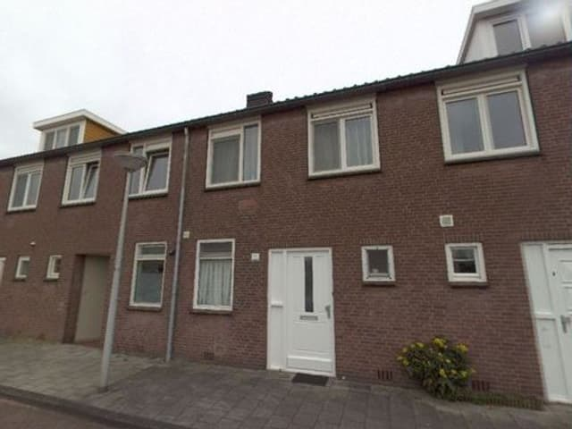
The street, as photographed. Panorama © City of Amsterdam, CC BY 4.0 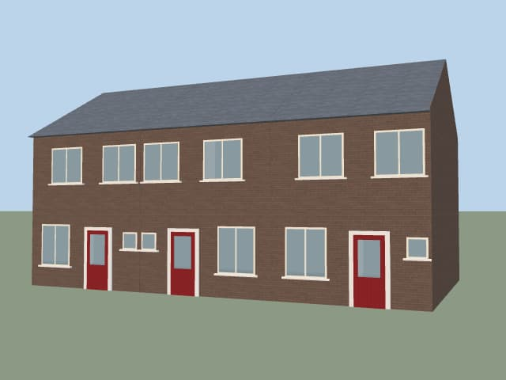
The design, as the game draws it Nieuw-West terraced house, dark red-brown brick
nw-rowhouse-door-windowNieuw-West terraced house, dark red-brown brick, front door with white surround between a big window and a small window, two upper windows, low pitched roof along the street (the 8.5 x 5.0 m cluster, Geuzenveld/Slotermeer/Slotervaart)
Where
Nieuw-West (Osdorp-Oost, Slotermeer-West, Slotermeer-Noordoost, Slotervaart-Zuid): Osdorp-Zuidoost 328, Jan de Louterbuurt 252, Meerwaldtbuurt 190, Louis Crispijnbuurt 176, Van Tijenbuurt 123
2 variants
- Dark tile roof (almost black) 897
- Terracotta tile roof 172
-
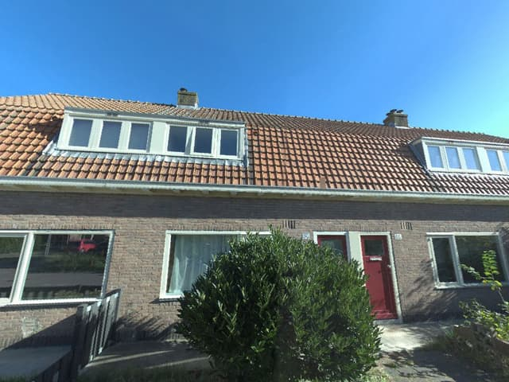
The street, as photographed. Panorama © City of Amsterdam, CC BY 4.0 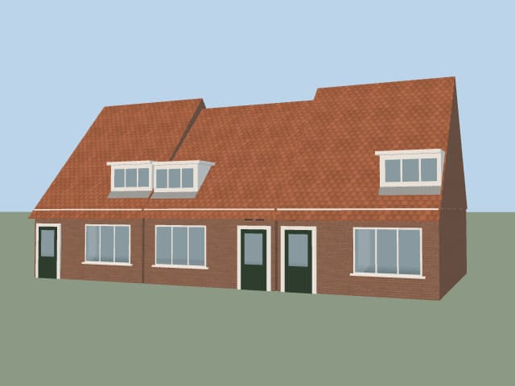
The design, as the game draws it Tuindorp Oostzaan
Garden-village cottage: brick ground storey with eaves at ~2.75 m under a white timber…
nd-to-cottageTuindorp Oostzaan (1921-23) garden-village cottage: brick ground storey with eaves at ~2.75 m under a white timber cornice, steep pantile roof with a flat-roofed white dormer over the party wall between two window sides, paired doors (Kometensingel, Uranusstraat, Neptunusstraat, Rigelstraat, Aldebaranstraat, Betelgeuzestraat, Grote and Kleine Beerstraat, Poolsterstraat)
Where
Noord (Tuindorp Oostzaan): Tuindorp Oostzaan-Oost 774
2 variants
- dark green doors, brown-orange pantiles (1921-22 streets) 549
- red doors, orange pantiles (1923 streets) 225
-
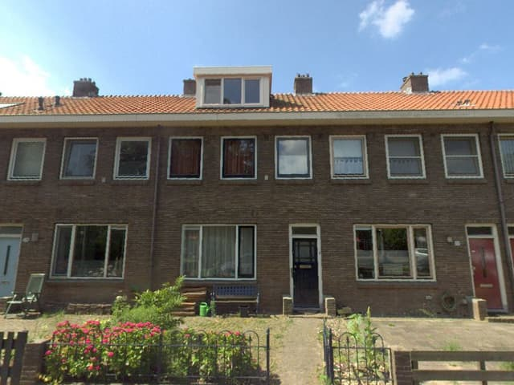
The street, as photographed. Panorama © City of Amsterdam, CC BY 4.0 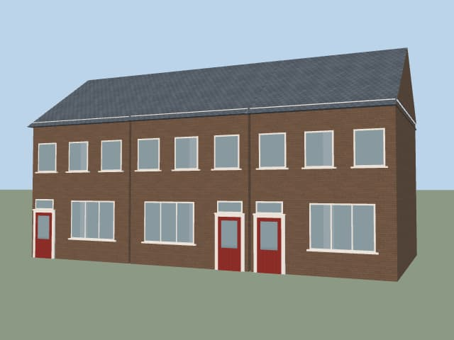
The design, as the game draws it Tuindorp Oostzaan-Oost
Two-storey terraced house in dark clinker brick
nd-to-rowTuindorp Oostzaan-Oost (1936-38) two-storey terraced house in dark clinker brick, white eaves fascia, pantile roof; paired red doors with transom lights (Kometensingel, Vegastraat, Meteorenweg, Meteorensingel, Plejadenweg, Antarusstraat)
Where
Noord (Tuindorp Oostzaan): Tuindorp Oostzaan-Oost 508
4 variants
- three equal upper windows (1936, 1938 projects) 282
- wide upper window over the living room, 2-light window over the door (1937 project) 179
- triple, re-roofed in orange pantiles 35
- wide, orange pantiles 12
-
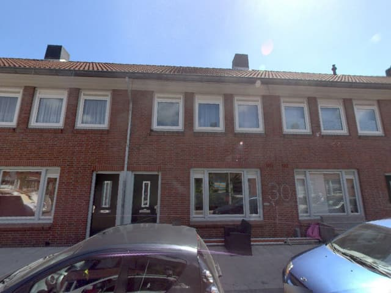
The street, as photographed. Panorama © City of Amsterdam, CC BY 4.0 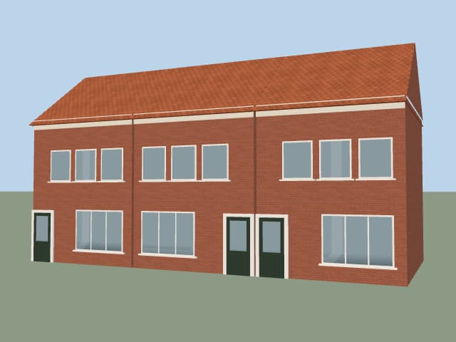
The design, as the game draws it Blauwe Zand
Two-storey terraced house: red-brown brick
nd-bz-brick-rowBlauwe Zand (1931-32) two-storey terraced house: red-brown brick, cream rendered frieze under the eaves, orange-red pantile roof, three white-framed upper windows, paired dark green doors (Waddenweg, Texelweg, Terschellingstraat, Voornestraat, Walcherenstraat, Goereestraat and the other island streets)
Where
Noord (Tuindorp Buiksloot): Blauwe Zand 501
1 variant
- dark green doors 501
-
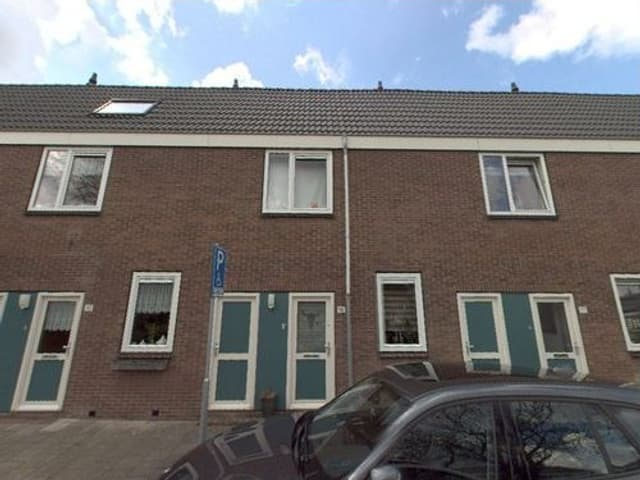
The street, as photographed. Panorama © City of Amsterdam, CC BY 4.0 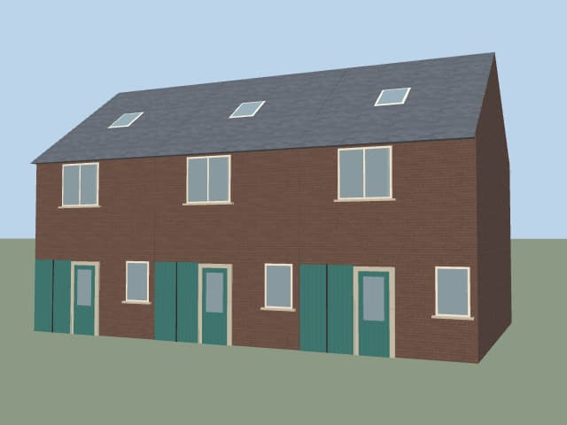
The design, as the game draws it Nieuw-West terraced house, brick, cream garage door + front door at street level
nw-rowhouse-garage-doorNieuw-West terraced house, brick, cream garage door + front door at street level, one window per storey, pitched roof along the street with a rooflight (the 8.5 x 5.0 m cluster, Slotermeer/Slotervaart)
Where
Nieuw-West (Osdorp-Oost, De Punt): Osdorp-Zuidoost 296, Dijkgraafpleinbuurt 134
6 variants
- Teal-painted garage door and glazed door, slate roof, white frames (Slotermeer: Joannes de Swaefhof, Pieter Oosterleehof, Prof. Ph. Kohnstammstraat, Willem Bartjenshof...) 172
- Cream garage door, dark navy door, terracotta tile roof (Pestalozzihof, Theo Thijssenhof, Salzmannhof...) 86
- Cream garage door, red door, dark slate roof (Slotervaart: Gorsstraat, Wierdestraat, Ingelandenweg, Rijsdrechthof, Wijmarkthof, Waterschapstraat...) 82
- Cream garage door, mid-blue door, dark roof (Hoogheemraadweg, Bandijkstraat, Griendstraat) 52
- White glazed doors, slate roof (Foersterhof, Willem Bartjenshof south end) 27
- White glazed doors, tile roof (Prof. R. Casimirstraat, Jan Ligthartstraat) 11
-

The street, as photographed. Panorama © City of Amsterdam, CC BY 4.0 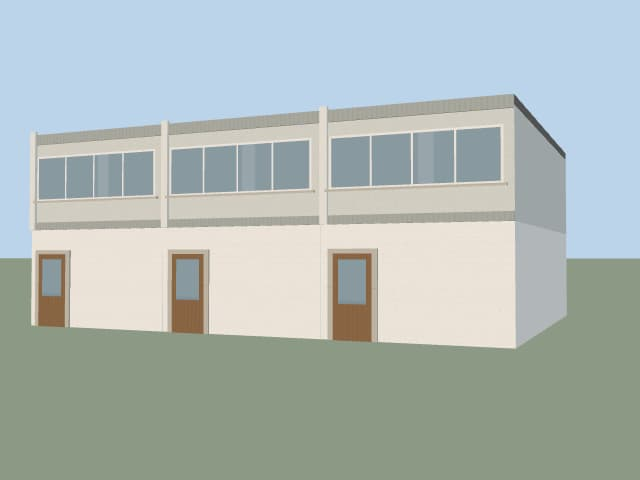
The design, as the game draws it Kantershof
Two-storey flat-roofed patio house
zo-ko-patioKantershof (1973-74, Bijlmer low-rise) two-storey flat-roofed patio house: a closed white-painted ground storey (patio wall and storage) with a timber gate, the upper storey a white-framed ribbon window over a light grey spandrel between concrete cross-wall ends, a coloured fascia at the roof and along the top of the white wall (green, ochre or grey per hof)
Where
Zuidoost (Geerdinkhof/Kantershof): Kantershof 374
3 variants
- grey fascia 287
- ochre-yellow fascia 72
- dark green fascia 15
-
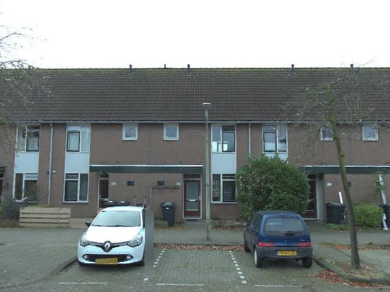
The street, as photographed. Panorama © City of Amsterdam, CC BY 4.0 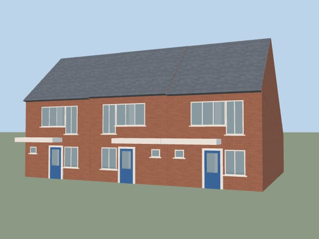
The design, as the game draws it Gein 4
Terraced house in mirrored pairs
zo-g4-canopy-pairGein 4 (1987) terraced house in mirrored pairs: red-brown brick, one long flat canopy over both front doors, wide upper window, dark tile roof (Wethouder Tabakstraat, Den Hertogstraat, Abrahamspad, Driessenstraat)
Where
Zuidoost (Gein): Gein 4 313
3 variants
- white canopy, blue doors 158
- dark green canopy, dark red doors, white strip bays 91
- dark green canopy, dark red doors, white strip bays (rows with the lower 4.45 m front eaves) 64
-
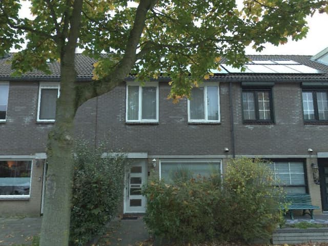
The street, as photographed. Panorama © City of Amsterdam, CC BY 4.0 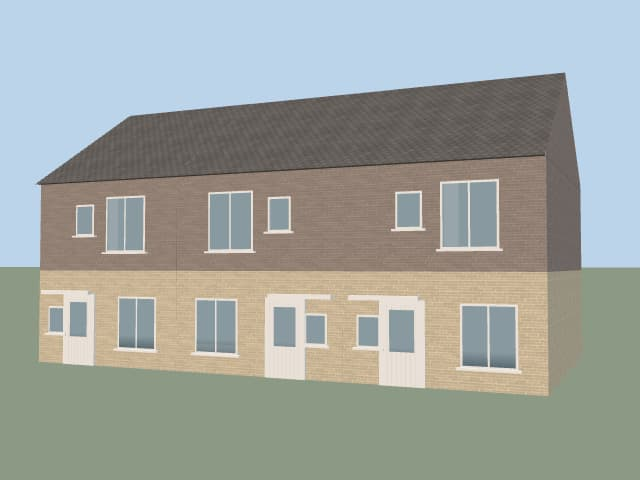
The design, as the game draws it Reigersbos
Terraced house in mirrored pairs
zo-rb-two-toneReigersbos (1983-84) terraced house in mirrored pairs: pale buff brick ground storey under darker upper brick, dark tile roof along the street with paired flues (Snelleveldstraat, Simonshavenstraat, Sleewijkstraat, Tefelenstraat, Tekkopstraat)
Where
Zuidoost (Reigersbos): Reigersbos 4 221, Reigersbos 3 84
3 variants
- Simonshaven: Tefelen window layout in Snelleveld brick (Reigersbos 4, 12.5 m pands with a low annex) 120
- Snelleveld: grey-brown upper brick, two upper windows (Reigersbos 4, 9 m deep) 101
- Tefelen: red-brown upper brick, small + two-light upper windows with white panels over them (Reigersbos 3) 84
-
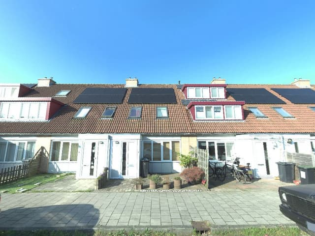
The street, as photographed. Panorama © City of Amsterdam, CC BY 4.0 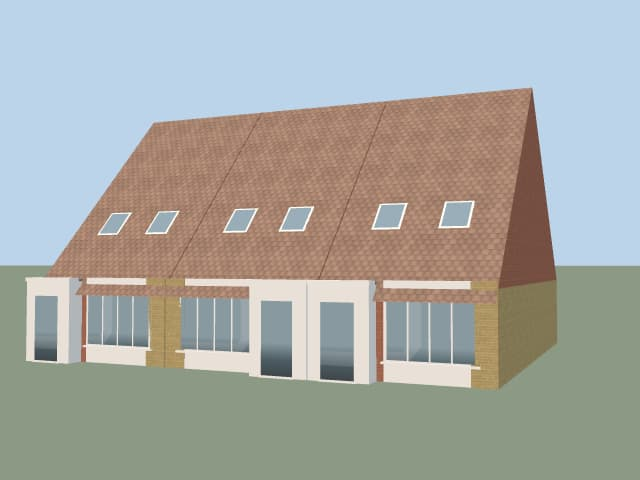
The design, as the game draws it Gein 4
Terraced house under a steep orange tile roof with eaves at ~2.9 m and two roof windows
zo-g4-roof-houseGein 4 (1986) terraced house under a steep orange tile roof with eaves at ~2.9 m and two roof windows, white-painted ground storey with an entrance vestibule and a window wall, buff brick piers and gables (Wethouder Wierdelsstraat, Vospad, in 't Veldstraat, De Vriesplantsoen)
Where
Zuidoost (Gein): Gein 4 291
1 variant
- orange tile roof 291
-
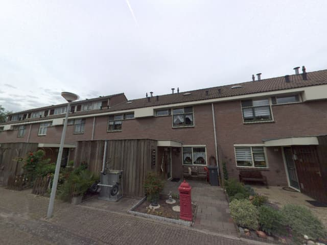
The street, as photographed. Panorama © City of Amsterdam, CC BY 4.0 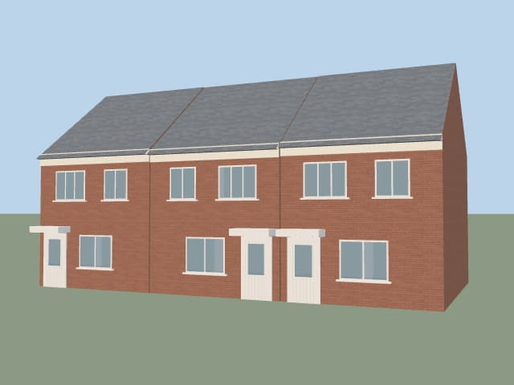
The design, as the game draws it Holendrecht-Oost
Terraced house: red-brown brick
zo-ho-maldenhofHolendrecht-Oost (1981-82) terraced house: red-brown brick, deep cream fascia under the eaves, door under a white flat canopy, dark tile roof (Maldenhof, Gaasperdammerpad)
Where
Zuidoost (Holendrecht): Holendrecht-Oost 279
1 variant
- red-brown brick 279
-
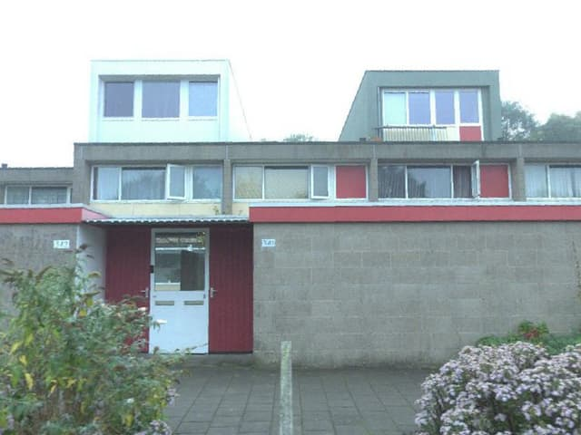
The street, as photographed. Panorama © City of Amsterdam, CC BY 4.0 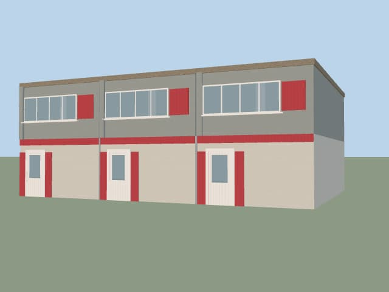
The design, as the game draws it Kelbergen
Bijlmer low-rise: flat-roofed two-storey terrace
zo-kb-patio-ribbonKelbergen (1971-72) Bijlmer low-rise: flat-roofed two-storey terrace, closed concrete-block ground storey with coloured gate leaves and fascia band, upper storey ribbon window and coloured panel between concrete posts
Where
Zuidoost (K-buurt): Kelbergen 274
4 variants
- red band and panels 109
- blue panels 72
- yellow band and panels 55
- dark green panels 38
-
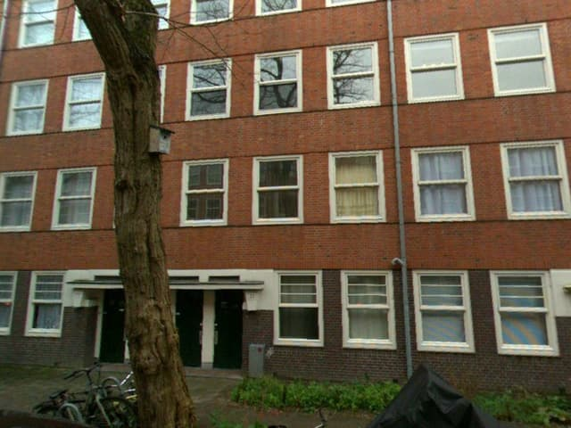
The street, as photographed. Panorama © City of Amsterdam, CC BY 4.0 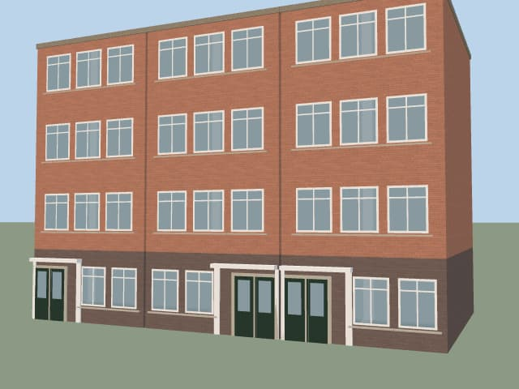
The design, as the game draws it Orteliusbuurt-Zuid, Jan Maijenbuurt and John Franklinbuurt
we-or-threeOrteliusbuurt-Zuid, Jan Maijenbuurt and John Franklinbuurt (1925-30) four-storey portiek block under a flat roof: per 6 m pand three white two-light windows with top lights on every upper storey, two ground windows and a door pair at the mirrored pair's shared entrance; variants for the brown Van Spilbergenstraat rows, the orange-red Mercatorstraat rows over a dark ground storey, the yellow Shackletonstraat rows and the banded John Franklinbuurt rows
Where
West (Hoofdweg e.o., Van Galenbuurt): Orteliusbuurt-Zuid 124, Jan Maijenbuurt 123, John Franklinbuurt 23
5 variants
- orange-red brick over a purple-brown ground storey, white frames, dark green doors in a white plaster surround 106
- brown-purple brick, white frames, varnished door pairs under small concrete hoods 81
- brown-purple brick, white two-light casements, dark doors in white-framed portiek openings 43
- brown-purple brick, white frames, a white concrete band over the ground storey, dark door pairs 23
- yellow brick over a red brick ground storey, white frames, dark doors in a white surround 17
-
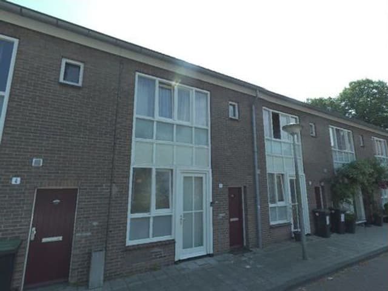
The street, as photographed. Panorama © City of Amsterdam, CC BY 4.0 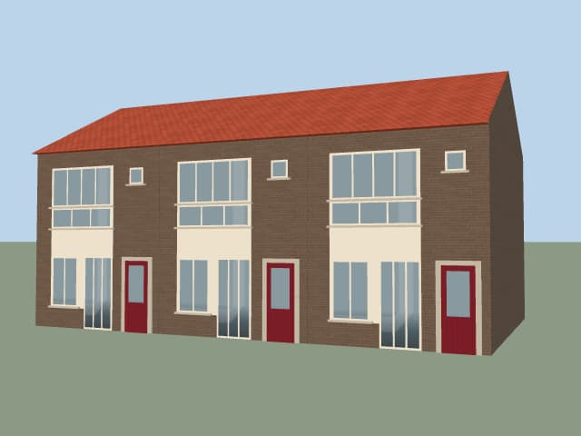
The design, as the game draws it Nieuw-West terraced house, brown brick, double-height glazed bay with cream spandrels…
nw-rowhouse-tall-glassNieuw-West terraced house, brown brick, double-height glazed bay with cream spandrels beside a dark red door, low pitched roof along the street (the 8.5 x 5.0 m cluster, Slotermeer: Justus Halbertsmastraat, Johan Kernstraat, Drusiushof...)
Where
Nieuw-West (Slotervaart-Noord): Jacob Geelbuurt 243
1 variant
- Cream bay frames, dark red door, terracotta roof 243
-
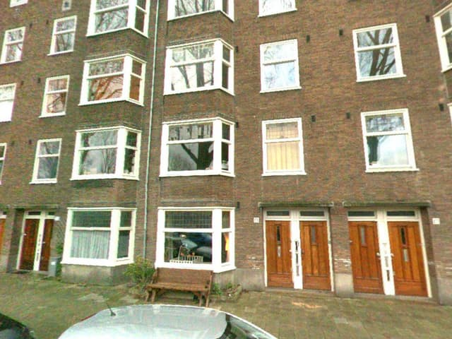
The street, as photographed. Panorama © City of Amsterdam, CC BY 4.0 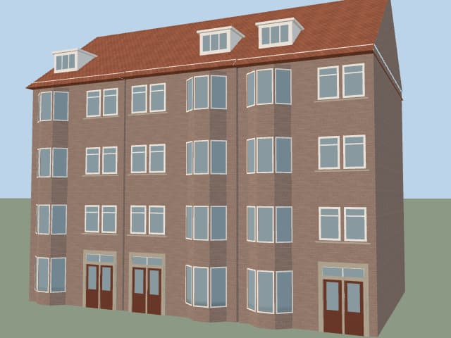
The design, as the game draws it Postjeskade / Curaçaostraat / Antillenstraat / Van Walbeeckstraat
Four-storey brown-brick portiek block under a tiled roof
we-pk-bayPostjeskade / Curaçaostraat / Antillenstraat / Van Walbeeckstraat (1935) four-storey brown-brick portiek block under a tiled roof: per 6.2 m pand a canted white bay over storeys 1-3 above a wide ground window, and a pair of varnished entrance doors with transom lights under a window column; mirrored so bays and door pairs meet in pairs
Where
West (Westindische Buurt): Postjeskade e.o. 218
1 variant
- brown brick, white frames, varnished doors 218
-
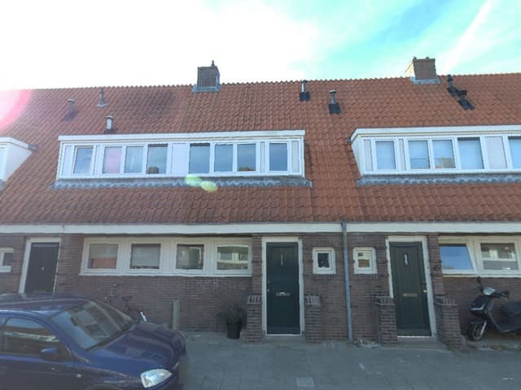
The street, as photographed. Panorama © City of Amsterdam, CC BY 4.0 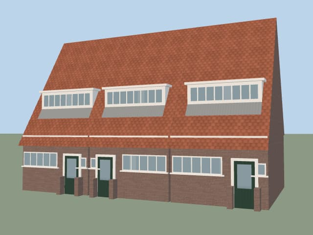
The design, as the game draws it Tuindorp Nieuwendam
Garden-village cottage: brick ground storey under a white eaves cornice at ~3.1 m
nn-cottageTuindorp Nieuwendam (1926-27) garden-village cottage: brick ground storey under a white eaves cornice at ~3.1 m, steep orange pantile roof with a long white flat-roofed dormer per house, dark green door between low brick piers, small square window and a white ribbon window (Beemsterstraat, Oudorperstraat, Wognumerstraat, Kwadijkerstraat, Oterleekstraat, Avenhornstraat, Wijdenesserstraat)
Where
Noord (Tuindorp Nieuwendam): Tuindorp Nieuwendam-Oost 209
1 variant
- dark green doors, orange-red pantiles 209
-
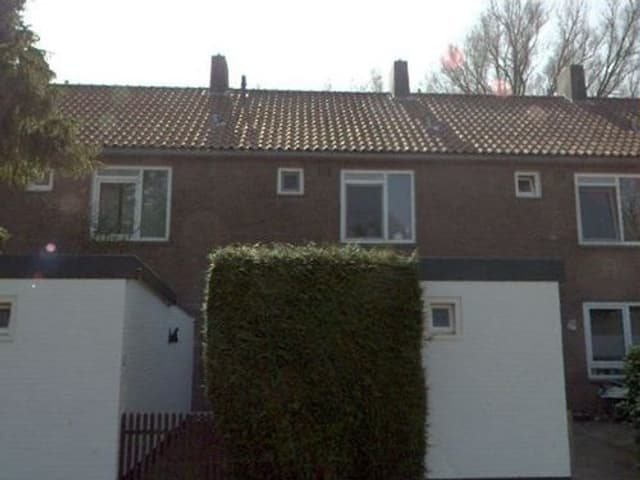
The street, as photographed. Panorama © City of Amsterdam, CC BY 4.0 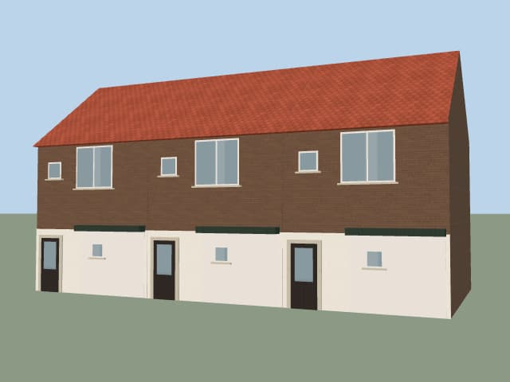
The design, as the game draws it Nieuw-West terraced house, dark red-brown brick over a white-painted ground storey with a…
nw-rowhouse-white-shedsNieuw-West terraced house, dark red-brown brick over a white-painted ground storey with a white shed and a dark green shed roof at the front, recessed door, one big and one small square window above, terracotta tile roof along the street (Slotermeer: Jacob Tilstraat, Daam van Harenstraat, Willem van Hembyzestraat, Gillis Steltmanstraat, Ellert Vlieropstraat)
Where
Nieuw-West (Geuzenveld): Wegener Sleeswijkbuurt 202
1 variant
- Dark red-brown brick, white ground storey and sheds, dark green shed roof, terracotta tile roof 202
-
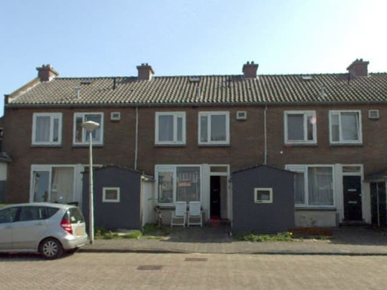
The street, as photographed. Panorama © City of Amsterdam, CC BY 4.0 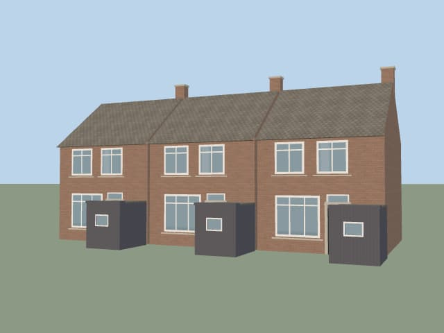
The design, as the game draws it Dichtersbuurt
Two-storey terraced house in brown-red brick under a grey concrete-tile gable
fe-db-rowDichtersbuurt (1954) two-storey terraced house in brown-red brick under a grey concrete-tile gable: wide ground window and black door with transom, two white-framed upper windows, a stack on every party wall, a dark grey timber shed in the front garden (Slauerhoffstraat, Boutensstraat, Joannes Reddingiusstraat, Leopoldstraat, Slotermeerlaan)
Where
Nieuw-West (Slotermeer-Zuidoost): Dichtersbuurt 194
1 variant
- black door, white frames 194
-
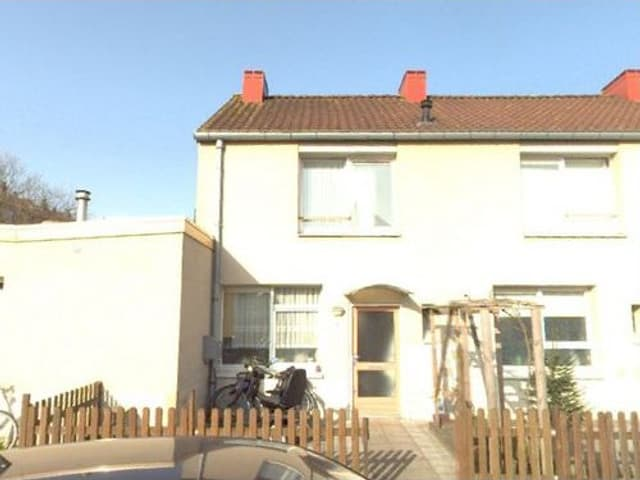
The street, as photographed. Panorama © City of Amsterdam, CC BY 4.0 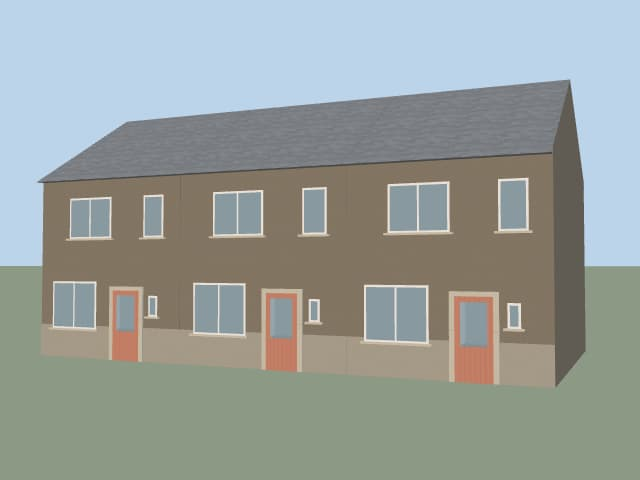
The design, as the game draws it Nieuw-West terraced house, rendered walls over a white-tile plinth
nw-rowhouse-render-tileNieuw-West terraced house, rendered walls over a white-tile plinth, big window + door + slit window, two upper windows, tile roof along the street (the 8.5 x 5.0 m cluster, Slotervaart: Pieter Postsingel, Cornelis Vriendtstraat, Antoon Keldermansstraat, Philip Vingboonsstraat, Joost Bilhamerstraat)
Where
Nieuw-West (Geuzenveld): Ruys de Beerenbrouckbuurt 179
2 variants
- Greige render, dark tile roof 159
- Cream render, terracotta tile roof 20
-
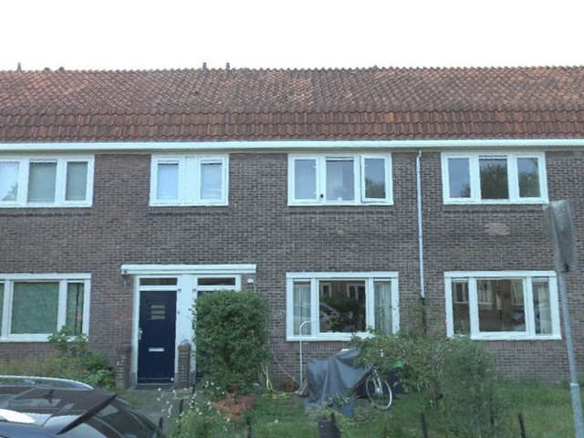
The street, as photographed. Panorama © City of Amsterdam, CC BY 4.0 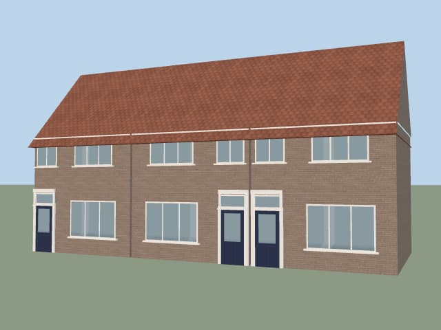
The design, as the game draws it Tuindorp Nieuwendam
Two-storey terraced house in brown brick
nn-rowTuindorp Nieuwendam (1926-27) two-storey terraced house in brown brick, eaves at ~5.2 m under a white fascia and a steep pantile roof; 3-light window over the living room, 2-light over the door; paired navy doors with transoms in a white surround (Beemsterstraat, Oudorperstraat, Wijdenesserstraat, Blokkerstraat, Avenhornstraat, Edammerstraat, Venhuizenstraat)
Where
Noord (Tuindorp Nieuwendam): Tuindorp Nieuwendam-Oost 169
2 variants
- weathered red-brown pantiles 122
- orange-red pantiles 47
-
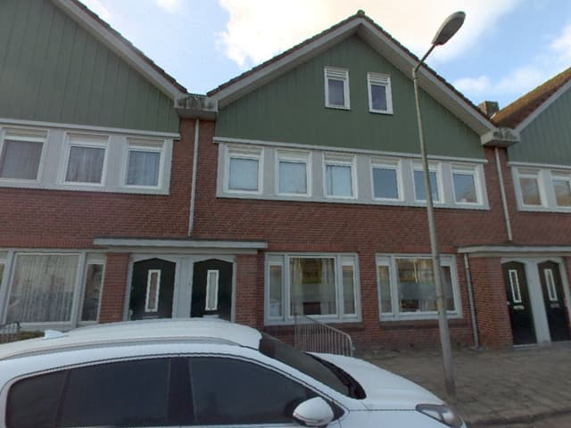
The street, as photographed. Panorama © City of Amsterdam, CC BY 4.0 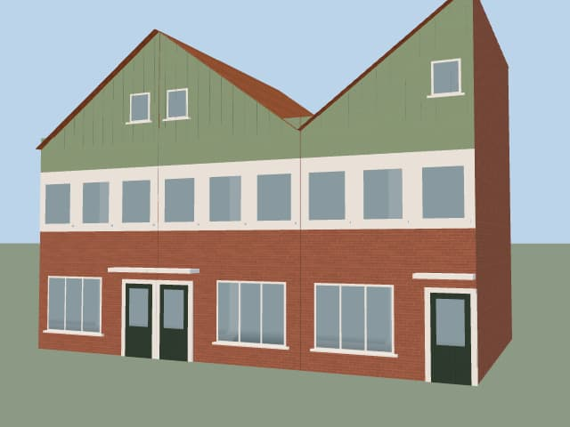
The design, as the game draws it Blauwe Zand
Terraced pair under one front-facing gable of sage-green vertical boards
nd-bz-green-gableBlauwe Zand (1931-32) terraced pair under one front-facing gable of sage-green vertical boards: each house one half (roof rising from its free side to the ridge on the shared wall), white window band, brick ground storey, paired doors under a flat canopy (Hoekschewaardweg, Waddendijk, Waddenweg, Texelweg, Beijerlandstraat, Urkstraat)
Where
Noord (Tuindorp Buiksloot): Blauwe Zand 166
1 variant
- sage-green boarded gables 166
-
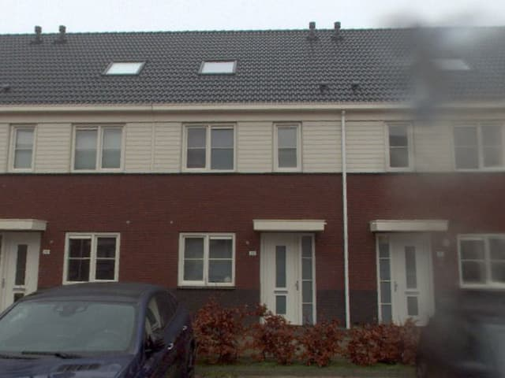
The street, as photographed. Panorama © City of Amsterdam, CC BY 4.0 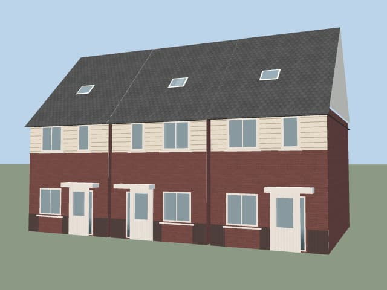
The design, as the game draws it Gooise Kant
Terraced house: red brick ground storey with a dark brick plinth course
th-gk-rowGooise Kant (2016-20, Driemond edge) terraced house: red brick ground storey with a dark brick plinth course, cream horizontal weatherboard across the upper windows, dark tile gable roof with rooflights, white door with side light under a flat white hood (or a continuous white canopy), mirrored pairs
Where
Zuidoost (K-buurt): Gooise Kant 161
2 variants
- flat white hood over each door 123
- one continuous white canopy over the ground storey 38
-
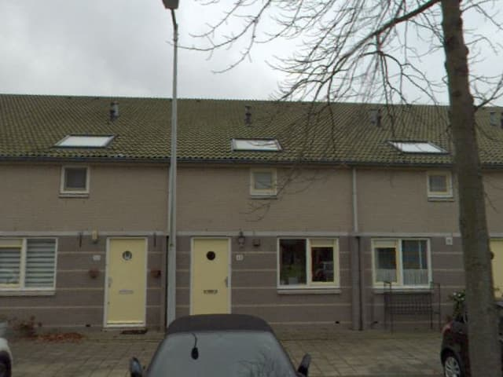
The street, as photographed. Panorama © City of Amsterdam, CC BY 4.0 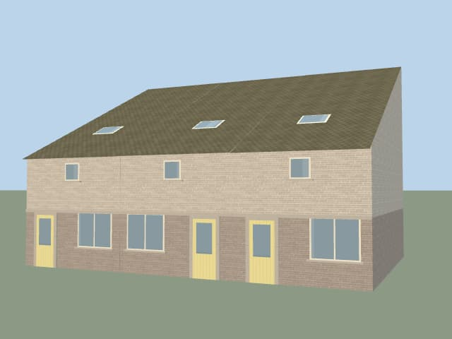
The design, as the game draws it Circus/Kermisbuurt
Terraced house with a swept front roof
nd-ck-saltboxCircus/Kermisbuurt (1989) terraced house with a swept front roof: two low storeys at the street (banded brick ground storey, pale upper storey with one small window), rooflights, three storeys at the garden (Reizigersweg, Scharenslijperspad, Mandenmakerspad, Orgeldraaierspad)
Where
Noord (Oostzanerwerf): Circus/Kermisbuurt 158
1 variant
- yellow doors, cream frames 158
-
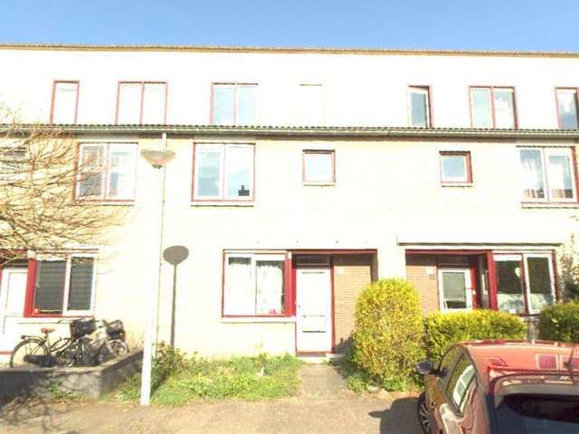
The street, as photographed. Panorama © City of Amsterdam, CC BY 4.0 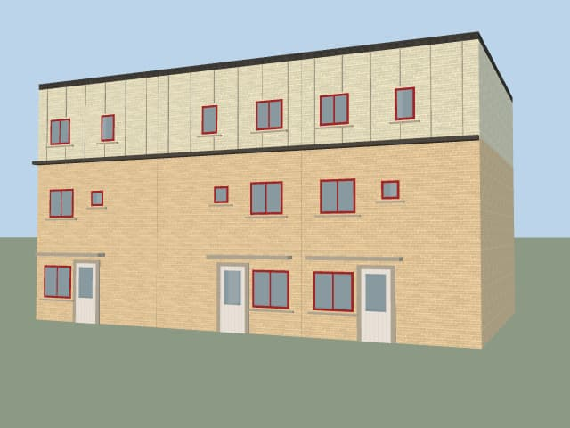
The design, as the game draws it Middelveldsche Akerpolder
Three-storey terraced house: two storeys of buff brick under a tiled ledge
nw-ma-clad-topMiddelveldsche Akerpolder (1988, Bonhoeffersingel, Romerostraat, Marianellastraat, Sandinostraat, Letelierstraat) three-storey terraced house: two storeys of buff brick under a tiled ledge, a cream sheet-clad top storey to a flat top, red frames, white doors under a concrete hood; mirrored pairs
Where
Nieuw-West (De Aker): Middelveldsche Akerpolder 141
1 variant
- buff brick, cream sheet-clad top storey, red frames, white doors 141
-
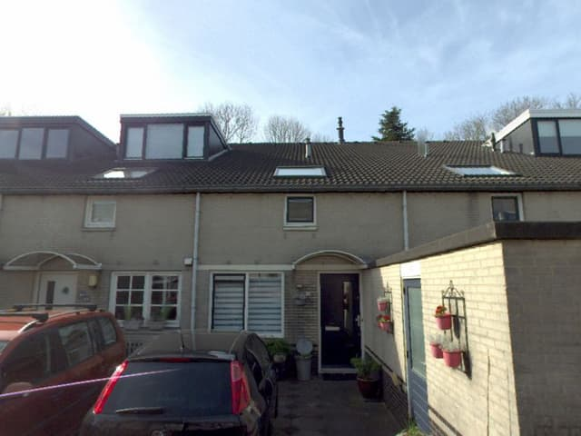
The street, as photographed. Panorama © City of Amsterdam, CC BY 4.0 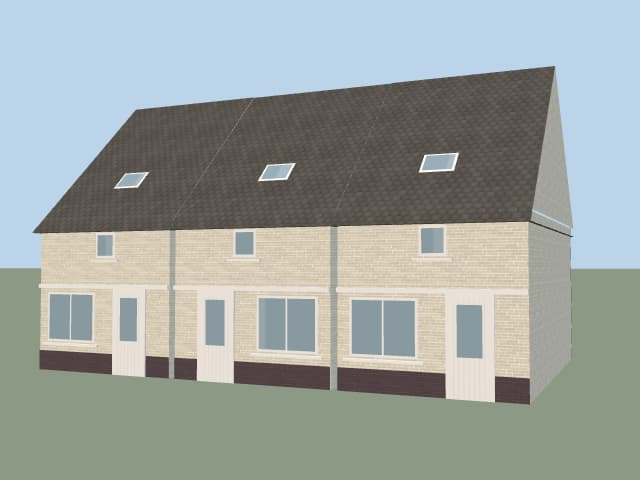
The design, as the game draws it De Eendracht
Terraced house: pale grey-beige brick over a dark purple-brown plinth
nw-ee-band-rowDe Eendracht (1990-91, J.G. Suurhoffstraat / Haya van Someren-Downerstraat) terraced house: pale grey-beige brick over a dark purple-brown plinth, wide ground window and white door under a thin white string course, one small square window above, low eaves under a dark tile roof with a rooflight, mirrored pairs
Where
Nieuw-West (Geuzenveld): De Eendracht 140
1 variant
- grey-beige brick, white doors and string course 140
-
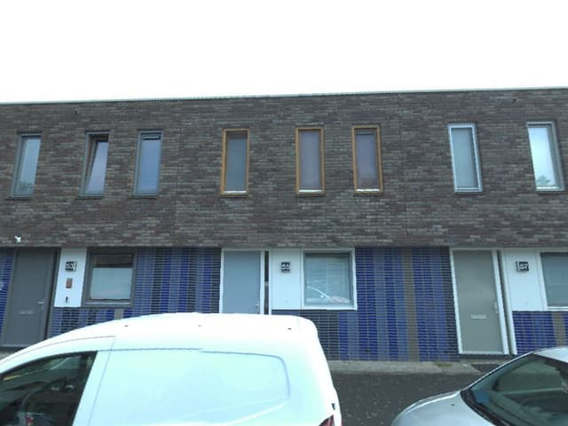
The street, as photographed. Panorama © City of Amsterdam, CC BY 4.0 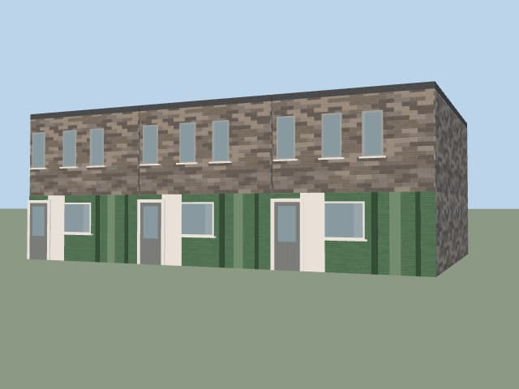
The design, as the game draws it K-buurt-Zuidwest
Two-storey flat-roofed terraced house
th-kz-rowK-buurt-Zuidwest (2006-07, Kekerstraat, Kervelplantsoen) two-storey flat-roofed terraced house: ground storey of coloured glazed-tile strips (blue, green, grey-mauve) with a grey door and a white panel, three tall narrow timber-framed windows in mottled dark brick above
Where
Zuidoost (K-buurt): K-buurt-Zuidwest 138
4 variants
- green glazed tile strips 59
- cobalt-blue glazed tile strips 35
- grey-mauve tile strips 34
- orange brick over brown timber 10
-
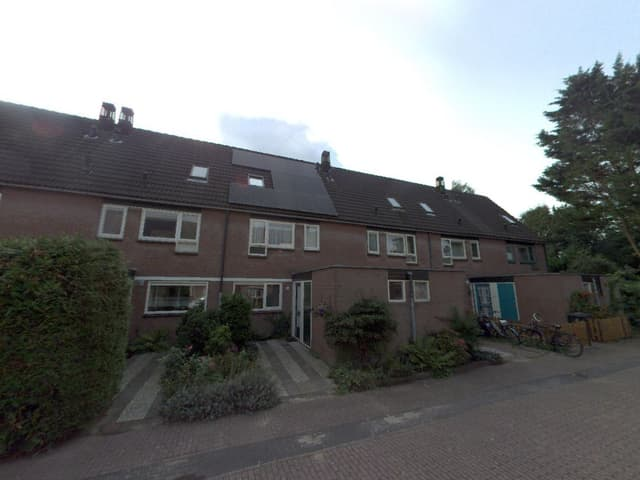
The street, as photographed. Panorama © City of Amsterdam, CC BY 4.0 The design, as the game draws it Holendrecht-Oost
Terraced house with a flat-roofed brick front annex
zo-ho-annexHolendrecht-Oost (1981) terraced house with a flat-roofed brick front annex (entrance + storage) on half of the frontage, red-brown brick, dark tile roof (Mijehof)
Where
Zuidoost (Holendrecht): Holendrecht-Oost 133
1 variant
- red-brown brick, white frames 133
-
The street, as photographed. Panorama © City of Amsterdam, CC BY 4.0 The design, as the game draws it Tuindorp Nieuwendam
Two-storey terraced house: brown brick
nn-bandTuindorp Nieuwendam (1927) two-storey terraced house: brown brick, upper-storey windows in a white timber band under the eaves, red pantile roof, paired red doors under a white lintel (Wognumerstraat, Schouwstraat, Stompetorenstraat, Wognumerplantsoen, Beemsterstraat)
Where
Noord (Tuindorp Nieuwendam): Tuindorp Nieuwendam-Oost 131
2 variants
- white band broken into window panels: over the paired doors and over the living-room window 74
- white band runs the whole row under the eaves 57
-
The street, as photographed. Panorama © City of Amsterdam, CC BY 4.0 The design, as the game draws it Reigersbos
Terraced house in mirrored pairs
zo-rb-pair-doorReigersbos (1983-84) terraced house in mirrored pairs: two blue doors side by side under one grey concrete canopy, buff brick with a red-brown panel over the doors (or red-brown throughout), dark tile roof (Slichtenhorststraat, Sleewijkstraat, Snelleveldplein)
Where
Zuidoost (Reigersbos): Reigersbos 4 130
2 variants
- buff brick, red-brown panel over the doors 105
- red-brown brick throughout 25
-
The street, as photographed. Panorama © City of Amsterdam, CC BY 4.0 The design, as the game draws it Reigersbos
Flat-roofed terraced house: red-brown brick ground storey and party-wall piers
zo-rb-timberReigersbos (1983) flat-roofed terraced house: red-brown brick ground storey and party-wall piers, horizontal dark timber boards on the upper storey, white frames and a white fascia over the ground window (Sinderenstraat, Silvoldestraat, Schaikstraat)
Where
Zuidoost (Reigersbos): Reigersbos 4 129
1 variant
- dark-brown boards over red-brown brick 129
-
The street, as photographed. Panorama © City of Amsterdam, CC BY 4.0 The design, as the game draws it Reigersbos
Flat-roofed terraced house in mirrored pairs
zo-rb-flat-bandReigersbos (1983-84) flat-roofed terraced house in mirrored pairs: grey-beige or brown brick, white concrete band over the ground storey, doors paired with a small square window, one wide three-light upper window under a white lintel (Tolkamerstraat, Trichtstraat, Twellostraat, Tongerenstraat)
Where
Zuidoost (Reigersbos): Reigersbos 3 128
2 variants
- grey-beige brick 67
- brown brick 61
-
The street, as photographed. Panorama © City of Amsterdam, CC BY 4.0 The design, as the game draws it Nieuw-West terraced house, yellow or brown brick
nw-rowhouse-red-panel-doorNieuw-West terraced house, yellow or brown brick, white-framed window group over a red panel beside a transomed door, a small window, two upper windows, dark tile roof along the street (Slotermeer/Slotervaart: Albertus Magnushof, Anselmushof, Thomas van Aquinostraat, Bierens de Haanstraat, Geert Grootestraat, Rudolf Agricolastraat)
Where
Nieuw-West (Slotermeer-West): Confuciusbuurt 124
3 variants
- Brown brick, red doors and panels, dark roof 49
- Yellow brick, red doors and panels, dark roof 48
- Yellow brick, dark grey/black doors and panels, dark roof 27
-
The street, as photographed. Panorama © City of Amsterdam, CC BY 4.0 The design, as the game draws it Vogeltjeswei
Two-storey terraced house in orange-red brick under a shallow dark roof
zo-vw-rowVogeltjeswei (1999) two-storey terraced house in orange-red brick under a shallow dark roof: cream door with side light, wide ground window, wide 3-light upper window (Pikoletstraat, Blauwdasstraat, Putterplantsoen, Suikerdiefjestraat, Troepiaalsingel)
Where
Zuidoost (Amsterdamse Poort e.o.): Vogeltjeswei 122
1 variant
- cream doors and frames 122
-
The street, as photographed. Panorama © City of Amsterdam, CC BY 4.0 The design, as the game draws it Middelveldsche Akerpolder
Two-storey terraced house in salmon-red brick under a dark grey tile roof swept low at…
nw-ma-red-doorMiddelveldsche Akerpolder (1988, M. Gandhilaan, Sandinostraat, Marianellastraat, Baldwinstraat) two-storey terraced house in salmon-red brick under a dark grey tile roof swept low at the back: red doors with transom lights under concrete hoods, white frames with yellow sashes, brick chimney stacks; mirrored pairs
Where
Nieuw-West (De Aker): Middelveldsche Akerpolder 116
1 variant
- salmon-red brick, white frames with yellow sashes, red doors, dark grey tiles 116
-
The street, as photographed. Panorama © City of Amsterdam, CC BY 4.0 The design, as the game draws it Orteliusbuurt-Noord
Four-storey portiek block in brown-purple brick under a flat roof
we-or-wideOrteliusbuurt-Noord (1925-28, Orteliusstraat) four-storey portiek block in brown-purple brick under a flat roof: per 6 m pand a wide four-light window and a narrow window on every upper storey, a wide ground window under a thin white canopy, dark green door pairs; mirrored pairs
Where
West (Van Galenbuurt): Orteliusbuurt-Noord 116
1 variant
- brown-purple brick, white frames, dark green doors, red tile parapet coping 116
-
The street, as photographed. Panorama © City of Amsterdam, CC BY 4.0 The design, as the game draws it Twiske-Oost
Two-storey terraced house in pale cream brick under a grey pantile roof
nd-tw-gableTwiske-Oost (1990-91) two-storey terraced house in pale cream brick under a grey pantile roof, mirrored pairs: wide upper window and a small one by the door (Gerardus van der Groeplaan, Pieter A. van Heijningestraat, Johannes J. Glasweg)
Where
Noord (Kadoelen): Twiske-Oost 112
1 variant
- pale cream brick, white frames and doors 112
-
The street, as photographed. Panorama © City of Amsterdam, CC BY 4.0 The design, as the game draws it Tuindorp Nieuwendam
Two-storey terraced house in brown brick under a white fascia and a tall pantile roof
nn-row-smallTuindorp Nieuwendam (1925-26) two-storey terraced house in brown brick under a white fascia and a tall pantile roof: three small 2-light upper windows, a 2-light living-room window, paired black doors with transoms in a white surround (Ilpendammerstraat, Schermerstraat, Zwaagstraat, Hensbroekerstraat, Purmerweg, Molengouw, Watergangseweg)
Where
Noord (Tuindorp Nieuwendam): Tuindorp Nieuwendam-Oost 111
2 variants
- weathered red-brown pantiles 70
- orange-red pantiles 41
-
The street, as photographed. Panorama © City of Amsterdam, CC BY 4.0 The design, as the game draws it Nieuw-West type 1
Four/five-storey brick portiekflat
nw-portiek-brick-pitchedNieuw-West type 1: four/five-storey brick portiekflat, pitched roof, five-bay front with balconies either side of the stair core (14.4 x 10.5 m footprint cluster, 357 panden, 1953-64)
Where
Nieuw-West (Osdorp-Oost, Slotermeer-West): Wildeman 64, Confuciusbuurt 37, Lodewijk van Deysselbuurt 8
6 variants
- Original brown brick, open balconies with painted solid parapets, white-framed windows, blue/green doors (grey-brown brick; 42 4-storey Slotermeer/Geuzenveld members, see evidence) 42
- Re-clad: grey ribbed panels under three-light ribbon windows (balconies enclosed, window bays turned into ribbons), brown brick piers and plinth kept, blue doors 24
- Brown brick with cream-painted spandrel/window bands in the window bays (every one of the 13 non-re-clad Sonderbuur survey members), balconies with painted solid parapets 21
- Re-clad over everything: light grey ribbed panels cover the brick piers and the stair core as well (brick kept only on the ground storey), ribbon windows, blue doors 19
- Yellow brick, same five-bay front (4-storey Slotermeer members with painted balcony fronts and red doors) 3
- Rendered cream walls over the brick plinth, balconies kept (parameter exercise: not seen on a type-1 pand)
-
The street, as photographed. Panorama © City of Amsterdam, CC BY 4.0 The design, as the game draws it Middelveldsche Akerpolder
Two-storey terraced house in pale beige brick under a dark grey tile roof swept low at…
nw-ma-yellow-doorMiddelveldsche Akerpolder (1988-89, Letelierstraat, Karl Grögersingel, Jarasingel, Anielewiczsingel, Trijn Hullemanlaan) two-storey terraced house in pale beige brick under a dark grey tile roof swept low at the back: yellow doors with sidelights under white canopies, white frames, two upper windows; mirrored pairs
Where
Nieuw-West (De Aker): Middelveldsche Akerpolder 108
1 variant
- pale beige brick, white frames, yellow doors, dark grey tiles 108
-
The street, as photographed. Panorama © City of Amsterdam, CC BY 4.0 The design, as the game draws it Gein 3
Terraced house: cream vertical boards on the ground storey
zo-g3-red-cladGein 3 (1985-86) terraced house: cream vertical boards on the ground storey, red boards on the upper storey, white downpipes at every party wall, dark tile roof along the street (Jan Somerhof, Jan Nautahof, Hendrik Veldhuishof, Johan Schamppad, Cornelis Aarnoutsstraat, Jacob Krüsestraat)
Where
Zuidoost (Gein): Gein 3 107
1 variant
- red boards over cream boards 107
-
The street, as photographed. Panorama © City of Amsterdam, CC BY 4.0 The design, as the game draws it Twiske-Oost
Two-storey flat-roofed terraced house
nd-tw-flatTwiske-Oost (1990) two-storey flat-roofed terraced house: dark grey brick ground storey, striped ochre-and-grey upper storey, storage box at the street on some houses (Thomas Prinslaan, Johannes J. Glasweg, Pieter A. van Heijningestraat, Luyendijkje)
Where
Noord (Kadoelen): Twiske-Oost 105
2 variants
- no storage box in the footprint 68
- storage box in front (BAG ring notch) 37
-
The street, as photographed. Panorama © City of Amsterdam, CC BY 4.0 The design, as the game draws it Nieuw-West terraced house, brown brick, narrow glazed bay
nw-rowhouse-tall-glass-panelNieuw-West terraced house, brown brick, narrow glazed bay (dark door beside a two-light window, transoms) under a beige spandrel panel and a two-light upper window, a cream storage door and a vent window beside it, low pitched tile roof along the street (Slotervaart: Louis Couperusstraat, Aart van der Leeuwstraat, Ellert Vlieropstraat, Eduard Vetermanstraat, Arthur van Schendelstraat)
Where
Nieuw-West (Slotermeer-Zuidoost, Geuzenveld): Louis Couperusbuurt 97, Wegener Sleeswijkbuurt 8
1 variant
- Beige spandrel panels, dark door, cream storage door, mossy terracotta roof 105
-
The street, as photographed. Panorama © City of Amsterdam, CC BY 4.0 The design, as the game draws it Tuindorp Amstelstation
Two-storey brick duplex
oo-ta-sideTuindorp Amstelstation (1947-48) two-storey brick duplex (upstairs and downstairs flat), paired doors, balcony at the party wall doubled with the mirrored neighbour, coloured eaves board (Rosendaalstraat, Starrenboschstraat, Manenburgstraat, Somerlustpad)
Where
Oost (Frankendael): Tuindorp Amstelstation 100
3 variants
- light-blue doors, blue rails and eaves board 58
- red doors, red balcony rails and eaves board 33
- orange-brown doors, brown rails and eaves board 9
-
The street, as photographed. Panorama © City of Amsterdam, CC BY 4.0 The design, as the game draws it Holendrecht-Oost
Terraced house in mirrored pairs
zo-ho-hoodHolendrecht-Oost (1984) terraced house in mirrored pairs: red-brown brick, white pointed hood over the door, wide window below a wide window and a clerestory ribbon, dark tile roof along the street (Mijndenhof east)
Where
Zuidoost (Holendrecht): Holendrecht-Oost 94
2 variants
- white frames 63
- dark green frames (sunlit rows) 31
-
The street, as photographed. Panorama © City of Amsterdam, CC BY 4.0 The design, as the game draws it Middelveldsche Akerpolder
Two-storey terraced house in brown-purple brick under a red-brown pantile roof swept low…
nw-ma-greenMiddelveldsche Akerpolder (1989-90, Koejemansstraat, Jacob Paffstraat, Trijn Hullemanlaan, Ernst Cahnsingel) two-storey terraced house in brown-purple brick under a red-brown pantile roof swept low at the back: dark green frames, white panelled doors, grey concrete lintels; mirrored pairs
Where
Nieuw-West (De Aker): Middelveldsche Akerpolder 89
2 variants
- brown-purple brick, dark green frames, white doors (door and window under concrete lintels) 70
- same brick and frames, wide three-light ground window and paired doors under one hood 19
-
The street, as photographed. Panorama © City of Amsterdam, CC BY 4.0 The design, as the game draws it De Klomp, Weesp
ws-dk-1971De Klomp, Weesp (1971, Meester J.C. Bührmannlaan, J.A. Fijnvandraatlaan, M. Dotingalaan) two-storey terraced house between greige brick piers: a timber-clad front with a glazed door and a wide window on the ground storey under a fascia band, horizontal boards under a full-width window band upstairs, a dark tile roof with a box dormer
Where
Weesp (Weesp Binnenstad/Zuid): De Klomp 87
2 variants
- greige brick piers, dark green-grey boards and ground infill, white frames 51
- greige brick piers, cream boards and ground infill, white frames 36
-
The street, as photographed. Panorama © City of Amsterdam, CC BY 4.0 The design, as the game draws it De Eendracht
Terraced house: pale buff brick over a dark brick plinth
nw-ee-buff-rowDe Eendracht (1990, Marga Klompélaan / J.G. Suurhoffstraat) terraced house: pale buff brick over a dark brick plinth, white render panel between the stacked 2-light windows, teal door beside a grey panel in a shared recessed porch, dark tile gable roof with paired black vent pipes, mirrored pairs
Where
Nieuw-West (Geuzenveld): De Eendracht 84
1 variant
- pale buff brick, teal doors 84
-
The street, as photographed. Panorama © City of Amsterdam, CC BY 4.0 The design, as the game draws it Tuindorp Amstelstation
Two-storey brick duplex
oo-ta-centreTuindorp Amstelstation (1948) two-storey brick duplex, symmetric facade: paired doors in the middle under a wide balcony, coloured eaves board (Rosendaalstraat, Manenburgstraat, De Peerelstraat, Buitenrustpad, Middelhoffstraat)
Where
Oost (Frankendael): Tuindorp Amstelstation 83
4 variants
- orange-brown doors, brown rails and eaves board 35
- mint-green doors, green rails and eaves board 25
- yellow doors, yellow rails and eaves board 21
- red doors, red balcony rails and eaves board 2
-
The street, as photographed. Panorama © City of Amsterdam, CC BY 4.0 The design, as the game draws it Nieuw-Sloten
Narrow three-storey flat-roofed terraced house
nw-ns-red-threeNieuw-Sloten (1992, Hechtelstraat / Houthalenstraat) narrow three-storey flat-roofed terraced house: red-brown brick over a white glazed-brick ground storey with white doors; on the first floor two windows with dark grey brick panels between them, on the second floor one window and a narrow one at the party wall; mirrored pairs
Where
Nieuw-West (Sloten/Nieuw-Sloten): Nieuw-Sloten-Noordoost 70
1 variant
- red-brown brick, white glazed-brick ground storey 70
-
The street, as photographed. Panorama © City of Amsterdam, CC BY 4.0 The design, as the game draws it Kantershof
Patio house of zo-ko-patio with a set-back white third-storey box
zo-ko-patio-topKantershof (1973-74) patio house of zo-ko-patio with a set-back white third-storey box (a rooftop room glazed to the street) over part of the frontage
Where
Zuidoost (Geerdinkhof/Kantershof): Kantershof 68
3 variants
- grey fascia 58
- ochre-yellow fascia 6
- dark green fascia 4
-
The street, as photographed. Panorama © City of Amsterdam, CC BY 4.0 The design, as the game draws it Middelveldsche Akerpolder
Two-storey terraced house in cream brick under a red-brown pantile roof swept low at the…
nw-ma-portholeMiddelveldsche Akerpolder (1990, Geertruida van Lierstraat, Jacob Paffstraat, A.J. Koejemansstraat, Rudi Bloemgartensingel) two-storey terraced house in cream brick under a red-brown pantile roof swept low at the back: upstairs two round windows in square red frames beside a window over a white spandrel; red doors under a white band; mirrored pairs
Where
Nieuw-West (De Aker): Middelveldsche Akerpolder 64
1 variant
- cream brick, red porthole frames and doors, white band and spandrel, red-brown pantiles 64
-
The street, as photographed. Panorama © City of Amsterdam, CC BY 4.0 The design, as the game draws it Kantershof
Three-storey flat-roofed terraced house
zo-ko-threeKantershof (1973-74, Bijlmer low-rise) three-storey flat-roofed terraced house: light grey concrete spandrel panels and white-framed ribbon windows on the two upper storeys between concrete cross-wall ends, ground storey with a white glazed door and a wide window, a thin roof fascia (grey or ochre)
Where
Zuidoost (Geerdinkhof/Kantershof): Kantershof 61
2 variants
- grey fascia 54
- ochre-yellow fascia 7
-
The street, as photographed. Panorama © City of Amsterdam, CC BY 4.0 The design, as the game draws it Grunder/Koningshoef
Two-storey terraced house in orange-buff brick under a dark concrete-tile roof
zo-gk-blue-bayGrunder/Koningshoef (2007, Glanshof, Galantstraat, Gaandeweg, Gulden Kruispad) two-storey terraced house in orange-buff brick under a dark concrete-tile roof: a blue-grey weatherboarded strip with a tall narrow window over the entrance, a light-blue canopy band over the door and side light, two-light windows with a red-brown mullion beside it
Where
Zuidoost (Geerdinkhof/Kantershof): Grunder/Koningshoef 58
1 variant
- orange-buff brick 58
-
The street, as photographed. Panorama © City of Amsterdam, CC BY 4.0 The design, as the game draws it Oostoever Sloterplas
Three-storey terraced house: orange brick ground and first storey
nw-os-bandOostoever Sloterplas (1996, Hermitagelaan, Pradolaan, Guggenheimlaan) three-storey terraced house: orange brick ground and first storey, white rendered top storey under a thin flat roof edge; white rendered entrance zones with pink doors; mirrored pairs; a two-storey garden wing
Where
Nieuw-West (Slotervaart-Noord): Oostoever Sloterplas 57
1 variant
- orange brick, white top storey, white frames, pink doors 57
-
The street, as photographed. Panorama © City of Amsterdam, CC BY 4.0 The design, as the game draws it Nieuw-West terraced house, buff-grey brick, a three-light ribbon window over a ground…
nw-rowhouse-ribbon-fasciaNieuw-West terraced house, buff-grey brick, a three-light ribbon window over a ground storey with sidelit door and window under a continuous flat fascia (the walled forecourt roof), dark tile roof with dormers (Slotermeer/Geuzenveld: Korte Water, Middelveldstraat)
Where
Nieuw-West (De Punt): Dijkgraafpleinbuurt 57
3 variants
- Dark green fascia 25
- Dark navy/brown fascia 18
- Dark red fascia 14
-
The street, as photographed. Panorama © City of Amsterdam, CC BY 4.0 The design, as the game draws it Tuindorp Amstelstation
One-storey row cottages: red door with transom
oo-ta-cottageTuindorp Amstelstation (1947) one-storey row cottages: red door with transom, wide window, white eaves board, orange pantile roof with chimney stacks (Manenburgstraat, Rusthofstraat, Rosendaalstraat)
Where
Oost (Frankendael): Tuindorp Amstelstation 55
1 variant
- red doors, orange pantiles 55
-
The street, as photographed. Panorama © City of Amsterdam, CC BY 4.0 The design, as the game draws it Buiksloterbreek
Three-storey flat-roofed terraced house
nd-bb-rowBuiksloterbreek (1990s, Noord) three-storey flat-roofed terraced house: pale grey brick block shared with the mirrored neighbour (blue doors in a recess under a white lintel, French windows with balconettes on top) beside a grey-blue glazed bay
Where
Noord (Banne Buiksloot): Buiksloterbreek 54
1 variant
- pale grey brick, blue doors 54
-
The street, as photographed. Panorama © City of Amsterdam, CC BY 4.0 The design, as the game draws it Jan Maijenbuurt
Amsterdam School four-storey portiek block in orange-red brick under a flat roof
we-jm-vespucciJan Maijenbuurt (1925-27, Vespuccistraat) Amsterdam School four-storey portiek block in orange-red brick under a flat roof: a parabolic arched portal on every second party line under a brick lisene with a ladder relief, one wide five-light window per upper storey, dark red header bands; mirrored pairs
Where
West (Van Galenbuurt): Jan Maijenbuurt 53
1 variant
- orange-red brick, dark red header bands and lisenes, white frames, dark doors in the portal 53
-
The street, as photographed. Panorama © City of Amsterdam, CC BY 4.0 The design, as the game draws it Circus/Kermisbuurt
Terraced roof house: one brick storey at the street under a white fascia board
nd-ck-roof-houseCircus/Kermisbuurt (1988-89) terraced roof house: one brick storey at the street under a white fascia board, big tiled roof with rooflights swept down to the ground storey, two storeys at the garden (Platenwagenweg, Stellingweg, Kapkarpad, Lemoenpad, Markiespad)
Where
Noord (Oostzanerwerf): Circus/Kermisbuurt 52
1 variant
- white frames and doors 52
-
The street, as photographed. Panorama © City of Amsterdam, CC BY 4.0 The design, as the game draws it Nieuw-West terraced house, white or grey rendered upper storey with yellow-brick…
nw-rowhouse-render-pilasterNieuw-West terraced house, white or grey rendered upper storey with yellow-brick party-wall pilasters, a small square window and a three-light ribbon window above a glazed garden-side ground storey with glazed door, dark tile roof (Slotermeer: Wessel Gansfortstraat, Geert Grootestraat, Rudolf Agricolastraat, Thomas a Kempisstraat, Carry van Bruggenstraat)
Where
Nieuw-West (Slotermeer-West): Confuciusbuurt 43, Lodewijk van Deysselbuurt 7
2 variants
- White render, buff brick pilasters, dark roof 32
- Grey render, buff brick pilasters, dark roof 18
-
The street, as photographed. Panorama © City of Amsterdam, CC BY 4.0 The design, as the game draws it Grunder/Koningshoef
Two-storey flat-roofed terraced house in orange-buff brick under a steel pergola
zo-gk-pergolaGrunder/Koningshoef (2007, Gaandeweg, Glanshof) two-storey flat-roofed terraced house in orange-buff brick under a steel pergola: a grey grid canopy along the roof edge on a steel post at every party wall; white French doors and a salmon front door with side light, a two-light window and a tall narrow window above
Where
Zuidoost (Geerdinkhof/Kantershof): Grunder/Koningshoef 50
2 variants
- orange-buff brick 39
- pale yellow brick 11
-
The street, as photographed. Panorama © City of Amsterdam, CC BY 4.0 The design, as the game draws it Oostoever Sloterplas
Two-storey terraced house with a tall white rendered upper storey
nw-os-white-lowOostoever Sloterplas (1996-97, Hermitagelaan, Pradolaan, Guggenheimlaan) two-storey terraced house with a tall white rendered upper storey: orange brick ground storey, wide white roof edge; white entrance zones with pink doors; mirrored pairs
Where
Nieuw-West (Slotervaart-Noord): Oostoever Sloterplas 49
1 variant
- orange brick ground storey band, white render above, white frames, pink doors 49
-
The street, as photographed. Panorama © City of Amsterdam, CC BY 4.0 The design, as the game draws it Gein 3
Terraced house in mirrored pairs
zo-g3-timber-brickGein 3 (1986-87) terraced house in mirrored pairs: buff-grey brick ground storey, dark-stained vertical boards on the upper storey with paired windows at each party wall, dark tile roof (Hendrik Hosstraat, Lambert Rimastraat)
Where
Zuidoost (Gein): Gein 3 49
1 variant
- dark boards over buff-grey brick 49
-
The street, as photographed. Panorama © City of Amsterdam, CC BY 4.0 The design, as the game draws it Nieuw-West type 1 sub-design A
Five-storey red-brown brick portiekflat
nw-portiek-wide-core-beekenhoffNieuw-West type 1 sub-design A (Beek en Hoff / Osdorper Ban / Notweg / Hooge Venne / Bullepad / Braak en Bosch): five-storey red-brown brick portiekflat, 14.1 x 10.4 m, wide 5.5 m stair core with two window columns, entrance up two steps, two 3.8 m balcony bays with storage doors at the party walls
Where
Nieuw-West (Osdorp-Oost, Slotermeer-Noordoost): Wildeman 43, Arondeusbuurt 3
2 variants
- Red-brown brick (sunlit photo median #70574b), cream-framed windows, open bar balconies with dark slab edges, dark grey doors (43 members) 43
- Buff / yellow-grey brick, same layout (3 members) 3
-
The street, as photographed. Panorama © City of Amsterdam, CC BY 4.0 The design, as the game draws it Oostoever Sloterplas
Three- and four-storey terraced house in dark red brick
nw-os-garageOostoever Sloterplas (1998-99, Alhambralaan, Mezquitalaan) three- and four-storey terraced house in dark red brick: timber garage door and a white concrete door surround on the ground storey, a four-light ribbon window on each upper storey; flat roof
Where
Nieuw-West (Slotervaart-Noord): Oostoever Sloterplas 43
2 variants
- dark red brick, white frames, timber garage doors, white door surrounds 33
- as brick, four storeys on the street with a three-storey back part 10
-
The street, as photographed. Panorama © City of Amsterdam, CC BY 4.0 The design, as the game draws it Tuindorp Nieuwendam
Terraced house: red brick ground storey
nn-boardTuindorp Nieuwendam (1933-34) terraced house: red brick ground storey, low upper storey boarded in dark green timber between three white windows, white fascia, pantile roof, paired dark doors with transoms (Monnikendammerplantsoen, Graftdijkerstraat, Oterleekstraat, Kwadijkerstraat, Scharwouderstraat)
Where
Noord (Tuindorp Nieuwendam): Tuindorp Nieuwendam-Oost 40
2 variants
- doors apart with two small toilet windows between them, 2-light living-room window 24
- dark green boarded upper storey, doors paired 16
-
The street, as photographed. Panorama © City of Amsterdam, CC BY 4.0 The design, as the game draws it Vogeltjeswei
Terraced house with a two-storey segmental glazed bay under a curved brick drum
zo-vw-bayVogeltjeswei (1999) terraced house with a two-storey segmental glazed bay under a curved brick drum, door beside it, white setback top storey behind a roof terrace (Troepiaalsingel, Pikoletstraat, Putterplantsoen)
Where
Zuidoost (Amsterdamse Poort e.o.): Vogeltjeswei 39
1 variant
- navy frames and spandrels 39
-
The street, as photographed. Panorama © City of Amsterdam, CC BY 4.0 The design, as the game draws it Nieuw-West terraced house, two storeys of red-brown brick under a low flat roof edge
nw-rowhouse-garage-door-2stNieuw-West terraced house, two storeys of red-brown brick under a low flat roof edge, white store door beside a blue front door and a tall narrow window at street level, two windows above (Slotervaart: Rijssenburghof, Opdijkstraat, Burgersweerhof)
Where
Nieuw-West (De Punt): Dijkgraafpleinbuurt 37
1 variant
- Red-brown brick, white store door, blue front door, white frames 37
-
The street, as photographed. Panorama © City of Amsterdam, CC BY 4.0 The design, as the game draws it Orteliusbuurt-Zuid
Three-storey portiek block in brown-purple brick under a red tile roof
we-or-roofOrteliusbuurt-Zuid (1925-28, Orteliusstraat) three-storey portiek block in brown-purple brick under a red tile roof: per 6 m pand three white sash windows per upper storey, two ground windows and a varnished door pair under a concrete hood, a white eaves board and one white dormer per pand; mirrored pairs
Where
West (Hoofdweg e.o.): Orteliusbuurt-Zuid 37
1 variant
- brown-purple brick, white sash windows, varnished doors, red tile roof with white dormers 37
-
The street, as photographed. Panorama © City of Amsterdam, CC BY 4.0 The design, as the game draws it Nieuw-West type 1 sub-design D
Five-storey portiekflat on a tall dark-red brick plinth
nw-portiek-plinth-hipNieuw-West type 1 sub-design D (Clauskindereweg / Botteskerksingel / Cruuskerkstraat / Brisselkerkstraat / Wolbrantskerkweg, 1961-62): five-storey portiekflat on a tall dark-red brick plinth, 15.1 x 10.9 m, entrance on a cantilevered landing with steps, balcony bays with cream corrugated parapets at both ends, hip or gable roof
Where
Nieuw-West (Osdorp-Midden): Botteskerkbuurt 36
1 variant
- Buff-brown brick above a dark red-brown brick plinth with a pale band, cream corrugated balcony parapets, yellow-cream entrance doors 36
-
The street, as photographed. Panorama © City of Amsterdam, CC BY 4.0 The design, as the game draws it Nieuw-West terraced house, three storeys of red-brown brick under a flat roof edge
nw-rowhouse-garage-door-3stNieuw-West terraced house, three storeys of red-brown brick under a flat roof edge, white store door beside a blue front door and a tall narrow window at street level, one window on the first floor and two on the second (Slotervaart: Hoogheemraadweg)
Where
Nieuw-West (De Punt): Dijkgraafpleinbuurt 36
1 variant
- Red-brown brick, white store door, blue front door, white frames 36
-
The street, as photographed. Panorama © City of Amsterdam, CC BY 4.0 The design, as the game draws it Oostoever Sloterplas
Terraced house in dark red brick
nw-os-garage-topOostoever Sloterplas (1998, Alhambralaan, Hof van Versailles) terraced house in dark red brick: timber garage door and white door surround, a continuous ribbon window on the first storey, a zinc-clad top storey set back from the brick parapet
Where
Nieuw-West (Slotervaart-Noord): Oostoever Sloterplas 35
1 variant
- mottled purple-brown brick, white frames, timber garage doors, zinc top storey 35
-
The street, as photographed. Panorama © City of Amsterdam, CC BY 4.0 The design, as the game draws it Oostoever Sloterplas
Three-storey terraced house: orange brick ground storey
nw-os-whiteOostoever Sloterplas (1996-97, Uffizilaan) three-storey terraced house: orange brick ground storey, white rendered upper storeys, flat roof; white entrance zones with pink doors; mirrored pairs
Where
Nieuw-West (Slotervaart-Noord): Oostoever Sloterplas 32
1 variant
- orange brick ground storey, white render above, white frames, pink doors 32
-
The street, as photographed. Panorama © City of Amsterdam, CC BY 4.0 The design, as the game draws it Nieuw-West cluster 3 leftovers
Three-storey red-brown brick portiekflat with pitched roof
nw-portiek-3st-blue-doorNieuw-West cluster 3 leftovers (Van Gilsestraat, Burgemeester van de Pollstraat, Burgemeester van Tienhovengracht in Slotermeer): three-storey red-brown brick portiekflat with pitched roof, 14.9 x 10.4 m, central blue door with a glazed grid under a small canopy, balcony with french door either side of the stair window on each upper floor, windows with glazing bars
Where
Nieuw-West (Slotermeer-Noordoost, Slotermeer-Zuidoost): Arondeusbuurt 25, Louis Couperusbuurt 6
2 variants
- Red-brown brick (sunlit photo median #bfa088 incl. lit mortar), white window frames, blue door, grey steel balconies (Van Gilsestraat) 25
- Same brick with teal-green window frames and door frames (Burgemeester van de Pollstraat, Burgemeester van Tienhovengracht) 6
-
The street, as photographed. Panorama © City of Amsterdam, CC BY 4.0 The design, as the game draws it De Eendracht
Narrow terraced house: low front eaves with a teal fascia over a mottled grey-beige brick…
nw-ee-box-frontDe Eendracht (1990, P. Lieftinckstraat) narrow terraced house: low front eaves with a teal fascia over a mottled grey-beige brick ground storey and dark navy plinth, teal door beside a grey panel, wide window under a white render panel, and a white two-storey box (wall dormer) rising from the eaves over the window half, joined with the mirrored neighbour's
Where
Nieuw-West (Geuzenveld): De Eendracht 30
1 variant
- grey-beige mottled brick, white box, teal door and fascia 30
-
The street, as photographed. Panorama © City of Amsterdam, CC BY 4.0 The design, as the game draws it Nieuw-West cluster 12 + 24
Five-storey flat-roofed rendered portiekflat 14.6 x 13.6 m on a dark-grey ground storey
nw-loggia-stack-flat-5stNieuw-West cluster 12 + 24 (Ookmeerweg, Willemskerkestraat, Steelvlietplein, Schoonboomstraat, Zonzeelstraat in Osdorp): five-storey flat-roofed rendered portiekflat 14.6 x 13.6 m on a dark-grey ground storey, two glazed loggia stacks (two columns each) flanking a plain wall with small slit windows, central entrance porch with a flat canopy
Where
Nieuw-West (Osdorp-Midden): Reimerswaal 30
2 variants
- Renovated white-cream render (photo median #d6d1bc), grey plinth #6e7370, light grey-blue loggia spandrels #a4adb3 (Schoonboomstraat, Zonzeelstraat, Willemskerkestraat, Steelvlietplein) 20
- Unrenovated grey-green render (photo median #7c7a6d), dark-grey plinth #373537, weathered grey loggia frames, green entrance door (Ookmeerweg, 10 panden) 10
-
The street, as photographed. Panorama © City of Amsterdam, CC BY 4.0 The design, as the game draws it Oostoever Sloterplas
Three-storey terraced house: orange brick ground storey
nw-os-tretjakovOostoever Sloterplas (1996, Tretjakovlaan) three-storey terraced house: orange brick ground storey, white rendered upper storeys, tall first-storey glazing behind a green-panelled French balcony; flat roof with a deep edge; mirrored pairs with dark green doors
Where
Nieuw-West (Slotervaart-Noord): Oostoever Sloterplas 30
1 variant
- orange brick ground storey, white render, green doors and balcony panels 30
-
The street, as photographed. Panorama © City of Amsterdam, CC BY 4.0 The design, as the game draws it Nieuw-West type 1 sub-design B
Five-storey brick portiekflat
nw-portiek-wide-core-slotermeerlaanNieuw-West type 1 sub-design B (Slotermeerlaan / Nieuwenhuysenstraat / Van Hanxleden Houwertstraat): five-storey brick portiekflat, 14.1 x 10.4 m, same wide-core frame as sub-design A but with a row of low windows at ground, dark bar balconies and teal storage doors
Where
Nieuw-West (Slotermeer-Noordoost): Arondeusbuurt 30
2 variants
- Dark red-brown brick (sunlit photo median #866a58), white-framed windows, dark bar balconies, teal storage doors 22
- Buff / yellow-grey brick (Van Hanxleden Houwertstraat, Nieuwenhuysenstraat), same layout 8
-
The street, as photographed. Panorama © City of Amsterdam, CC BY 4.0 The design, as the game draws it Nieuw-West cluster 5 design A
Five-storey brick portiekflat 19.1 x 10 m
nw-slit-window-garage-5stNieuw-West cluster 5 design A (Willem Molengraaffstraat, Blomwijckerpad, Groenpad, Witte Klok, Cromme Camp): five-storey brick portiekflat 19.1 x 10 m, ground storey of garage doors, doors and a glazed entrance porch, four rows of window pairs with a slit window over the stair, white-cream band above the ground storey
Where
Nieuw-West (Osdorp-Oost, Slotermeer-West): Wildeman 18, Jan de Louterbuurt 12
2 variants
- Brick, dark grey tile plinth with a glass-fronted stair entry and grey garage doors (Blomwijckerpad, Groenpad, Witte Klok) 18
- Brick (photo warm-pixel median #73523c), red doors, white-framed glass porch, brick-and-tan-panel ground storey (Willem Molengraaffstraat) 12
-
The street, as photographed. Panorama © City of Amsterdam, CC BY 4.0 The design, as the game draws it Nieuw-West cluster 2 design A
Five-storey brick portiekflat 17 x 10.6 m
nw-steel-stack-portiekNieuw-West cluster 2 design A (Pieter Calandlaan, Anske Lammingastraat, Jacob Krausstraat, Louis Bouwmeesterstraat, Tutein Noltheniusstraat, Johan Ramaerstraat): five-storey brick portiekflat 17 x 10.6 m, entrance at first-floor level up an open stair between two grey steel posts that carry stacked balconies and rise above the roof, window pairs either side, small windows in the plinth
Where
Nieuw-West (Slotervaart-Zuid): Louis Crispijnbuurt 30
1 variant
- Brown brick (photo warm-pixel median #664f36, lifted to #6e5640 between the two sampled crops), white window frames, grey steel posts, brown bar balustrades 30
-
The street, as photographed. Panorama © City of Amsterdam, CC BY 4.0 The design, as the game draws it Twiske-Oost
Flat-roofed terraced house with a white setback top storey behind a roof terrace
nd-tw-flat-topTwiske-Oost (1990) flat-roofed terraced house with a white setback top storey behind a roof terrace: dark grey ground storey, striped ochre-and-grey first storey (Thomas Prinslaan, Nathan F. Israelweg)
Where
Noord (Kadoelen): Twiske-Oost 29
2 variants
- no storage box in the footprint 19
- storage box in front (BAG ring notch) 10
-
The street, as photographed. Panorama © City of Amsterdam, CC BY 4.0 The design, as the game draws it Nieuw-West cluster 4
Five-storey buff-brick portiekflat 15.0 x 11.9 m on a red-brick ground storey
nw-garage-pair-balcony-5stNieuw-West cluster 4 (Adingerdorphof, Borrendammehof, Dubbelmondehof, Pakingehof in Slotermeer): five-storey buff-brick portiekflat 15.0 x 11.9 m on a red-brick ground storey, two pairs of white solid-balustrade balconies over four garage doors, central entrance with cream double door and two steps, three-light stair windows on the axis
Where
Nieuw-West (Osdorp-Midden): Botteskerkbuurt 24
1 variant
- Buff brick above a red-brick ground storey (sunlit photo medians #c6ad92 / #b28d76), white balcony panels and frames, grey-blue garage doors 24
-
The street, as photographed. Panorama © City of Amsterdam, CC BY 4.0 The design, as the game draws it Weesp-Zuid, Weesp
ws-wz-bayWeesp-Zuid, Weesp (1951, Hugo de Grootlaan and neighbours) two-storey terraced house in brown brick under an orange tile roof: a white-framed window column at the pair line, the living-room window, a dark green panel and the bedroom window stacked in it; door and two small windows at the other side; mirrored pairs
Where
Weesp (Weesp Binnenstad/Zuid): Weesp-Zuid I 23
1 variant
- brown brick, white bay frames with dark green panels, orange-red tiles 23
-
The street, as photographed. Panorama © City of Amsterdam, CC BY 4.0 The design, as the game draws it Nieuw-West type 6
Five-storey prefab-panel flat closed ground storey
nw-pilotis-panel-flatNieuw-West type 6: five-storey prefab-panel flat closed ground storey (garage doors), flat roof (15.7 x 9.9 m, 70 panden, 1953-62)
Where
Nieuw-West (Slotervaart-Noord): Jacob Geelbuurt 15, Emanuel van Meterenbuurt 6
3 variants
- Original prefab concrete-aggregate panels, white columns and balustrades 21
- Re-clad in grey panels (variant for the cladding parameter; not yet seen on a type-6 pand)
- Painted/rendered over the panels (variant for the cladding parameter; not yet seen on a type-6 pand)
-
The street, as photographed. Panorama © City of Amsterdam, CC BY 4.0 The design, as the game draws it Sporenburg
4.2 m patio house
oo-sb-garage-balconiesSporenburg (J.F. van Hengelstraat, 1990s) 4.2 m patio house: a recessed garage behind concrete columns with a folding gate, a cantilevered pink-grey brick storey with three tall timber windows each behind a small steel balcony cage, a flat parapet; a taller wing at the back of the plot
Where
Oost (Oostelijk Havengebied): Sporenburg 21
1 variant
- pink-grey brick, orange timber frames, grey steel cages and gates 21
-
The street, as photographed. Panorama © City of Amsterdam, CC BY 4.0 The design, as the game draws it Weesp-Zuid, Weesp
ws-wz-portholeWeesp-Zuid, Weesp (1950) two-storey terraced house in brown brick under an orange tile roof: the two doors of a pair share a round-arched recessed porch, a porthole over each door, a wide living-room window and a white-framed bedroom window to the other side; mirrored pairs
Where
Weesp (Weesp Binnenstad/Zuid): Weesp-Zuid I 21
1 variant
- brown brick, white frames, green doors, orange-red tiles 21
-
The street, as photographed. Panorama © City of Amsterdam, CC BY 4.0 The design, as the game draws it Grunder
Three-storey flat-roofed terraced house in red-brown brick over a timber-boarded ground…
zo-gk-gravendijkGrunder ('s-Gravendijkdreef, 2003) three-storey flat-roofed terraced house in red-brown brick over a timber-boarded ground storey with red doors; two tall French windows with grey balustrade panels per upper storey, staggered between the storeys
Where
Zuidoost (Geerdinkhof/Kantershof): Grunder/Koningshoef 20
1 variant
- red-brown brick, timber ground storey, red doors 20
-
The street, as photographed. Panorama © City of Amsterdam, CC BY 4.0 The design, as the game draws it Nieuw-West cluster 8 design B
Five-storey buff-brick portiekflat 17 x 11.7 m
nw-glazed-tower-buff-flatNieuw-West cluster 8 design B (Nolensstraat, Theo van Doesburgstraat, Bart van Hovestraat, Teixeira de Mattosstraat, De Savornin Lohmanstraat): five-storey buff-brick portiekflat 17 x 11.7 m, pairs of windows either side of a full-height glazed stair tower with a canopied entrance, small square stair windows, ribbon of attic windows under a thin flat roof edge
Where
Nieuw-West (Geuzenveld): Dudokbuurt 19
1 variant
- Buff / yellow brick (sunlit photo median #baa88d), white window frames, cream doors, grey-green canopy 19
-
The street, as photographed. Panorama © City of Amsterdam, CC BY 4.0 The design, as the game draws it Nieuw-West cluster 2 design C, entrance side
nw-peach-render-entrance-frontNieuw-West cluster 2 design C, entrance side (Cornelis Outshoornstraat, Ruys de Beerenbrouckstraat, Jan de Greefstraat, Lieven de Keystraat, Steven Vennecoolstraat, Aalbersestraat): five-storey rendered portiekflat 17 x 10.6 m, four windows per floor either side of a central stair strip of coloured panels, tiled plinth with a row of small vents, two doors beside the strip
Where
Nieuw-West (Geuzenveld): Ruys de Beerenbrouckbuurt 19
3 variants
- Ochre-yellow render (#938e7f), ochre surrounds and panels #8b6734, grey-yellow tile plinth (Cornelis Outshoornstraat, Steven Vennecoolstraat, Jan de Greefstraat) 8
- Peach render (photo median #8a7c6f, authored lifted to #cfae92 because the stucco slot renders sampled medians far darker than the photo, checked on the contact sheet), orange-brown window surrounds and stair-strip panels #8b5337, pink-beige tiled plinth (Ruys de Beerenbrouckstraat, Aalbersestraat, Lieven de Keystraat) 7
- Grey render (#8d8e8a), blue-grey surrounds and panels #7e8688, grey tile plinth (Jan de Greefstraat, Steven Vennecoolstraat 2085861) 4
-
The street, as photographed. Panorama © City of Amsterdam, CC BY 4.0 The design, as the game draws it Nieuw-West cluster 5 design B
Five-storey brick portiekflat 19.1 x 10 m
nw-tower-top-balcony-5stNieuw-West cluster 5 design B (Cornelis Lelylaan, Pieter Calandlaan, Andries Vierlinghstraat, Fijnje van Salverdastraat): five-storey brick portiekflat 19.1 x 10 m, brick stair tower with one small window per floor and a cap above the roof, narrow window either side, cream balcony stacks, wide ribbon windows at both ends, garages at the ends and red doors flanking the entrance
Where
Nieuw-West (Slotervaart-Zuid): Jacques Veltmanbuurt 17
1 variant
- Brick (sunlit photo warm-pixel median #695043), white frames, cream balcony slabs, red doors 17
-
The street, as photographed. Panorama © City of Amsterdam, CC BY 4.0 The design, as the game draws it De Klomp, Weesp
ws-dk-1986De Klomp, Weesp (1986, M. Dotingalaan) two-storey terraced house in buff brick under a steep brown tile roof with box dormers: door with sidelight and a wide window on the ground storey, two white-framed windows upstairs; mirrored pairs
Where
Weesp (Weesp Binnenstad/Zuid): De Klomp 17
1 variant
- buff brick, white frames, brown tiles 17
-
The street, as photographed. Panorama © City of Amsterdam, CC BY 4.0 The design, as the game draws it Weesp-Zuid, Weesp
ws-wz-plainWeesp-Zuid, Weesp (1950) two-storey terraced house in brown brick under an orange tile roof: doors in pairs at the pair line with diamond-lattice transoms in white frames, a wide living-room window, three small white-framed windows upstairs; mirrored pairs
Where
Weesp (Weesp Binnenstad/Zuid): Weesp-Zuid I 17
1 variant
- brown brick, white frames, green doors, orange-red tiles 17
-
The street, as photographed. Panorama © City of Amsterdam, CC BY 4.0 The design, as the game draws it Nieuw-West type 1 sub-design C
Four-storey brick portiekflat
nw-portiek-hof-garage-4stNieuw-West type 1 sub-design C (hof blocks of Slotermeer / Geuzenveld: Hegelhof, Immanuel Kanthof, John Lockehof, Melis Stokehof, Hugo Verriesthof, Henric van Veldekehof): four-storey brick portiekflat, 14 or 16.3 m, wide core with big two-light windows, balcony bays at both ends over garage doors, entrance up steps
Where
Nieuw-West (Slotermeer-West): Confuciusbuurt 8, Lodewijk van Deysselbuurt 8
6 variants
- Brown brick (sunlit photo median #6f5a4d), cream-framed windows, bar balconies, red garage and entrance doors (14 m members: two big windows + a stair window in the core) 6
- Brown brick, same layout, green-grey doors (14 m members: two big windows + a stair window in the core) 3
- Buff / yellow brick, same layout, green doors (John Lockehof, Henric van Veldekehof, Hugo Verriesthof) (14 m members: two big windows + a stair window in the core) 3
- Brown brick (sunlit photo median #6f5a4d), cream-framed windows, bar balconies, red garage and entrance doors (16.3 m members: four equal windows in the core) 2
- Brown brick, same layout, green-grey doors (16.3 m members: four equal windows in the core) 1
- Buff / yellow brick, same layout, green doors (John Lockehof, Henric van Veldekehof, Hugo Verriesthof) (16.3 m members: four equal windows in the core) 1
-

The street, as photographed. Panorama © City of Amsterdam, CC BY 4.0 The design, as the game draws it Postjeskade quay front
The five-storey version of the we-pk-bay portiek block
we-pk-bay5Postjeskade quay front (1935): the five-storey version of the we-pk-bay portiek block, canted white bays over storeys 1-4, door pairs, small dormers
Where
West (Westindische Buurt): Postjeskade e.o. 16
1 variant
- brown brick, white frames, varnished doors 16
-
The street, as photographed. Panorama © City of Amsterdam, CC BY 4.0 The design, as the game draws it Nieuw-West cluster 2 design C, balcony side: same building as…
nw-peach-render-balcony-frontNieuw-West cluster 2 design C, balcony side: same building as nw-peach-render-entrance-front seen from the other long side (large curved white slatted balconies each side of the stair strip, tiled plinth with doors in the strip)
Where
Nieuw-West (Geuzenveld): Ruys de Beerenbrouckbuurt 15
3 variants
- Peach render (photo median #8a7c6f, authored lifted to #cfae92 because the stucco slot renders sampled medians far darker than the photo, checked on the contact sheet), orange-brown window surrounds and stair-strip panels #8b5337, pink-beige tiled plinth (Ruys de Beerenbrouckstraat, Aalbersestraat, Lieven de Keystraat) 11
- Ochre-yellow render (#938e7f), ochre surrounds and panels #8b6734, grey-yellow tile plinth (Cornelis Outshoornstraat, Steven Vennecoolstraat, Jan de Greefstraat) 3
- Grey render (#8d8e8a), blue-grey surrounds and panels #7e8688, grey tile plinth (Jan de Greefstraat, Steven Vennecoolstraat 2085861) 1
-
The street, as photographed. Panorama © City of Amsterdam, CC BY 4.0 The design, as the game draws it Nieuw-West cluster 8 design A
Five-storey red-brick portiekflat 17 x 11.7 m
nw-glazed-tower-red-pitchedNieuw-West cluster 8 design A (Jan Mankesstraat, Jan Tooropstraat): five-storey red-brick portiekflat 17 x 11.7 m, glazed stair tower with balcony stacks either side, three-door glazed entrance lobby under a concrete canopy, thin cream bands at every floor, tiled pitched roof
Where
Nieuw-West (Overtoomse Veld): Overtoomse Veld-Noord 14
1 variant
- Red-brown brick (sunlit photo warm-pixel median #966a43 at 0363100012115348, #6d4f2c in shade), cream window frames and bands, concrete balcony slabs, grey-beige canopy, orange roof tiles 14
-
The street, as photographed. Panorama © City of Amsterdam, CC BY 4.0 The design, as the game draws it Nieuw-West cluster 5 design C
Five-storey brick portiekflat 19.1 x 10 m with a solid brick stair tower projecting from…
nw-brick-tower-stair-5stNieuw-West cluster 5 design C (Van Mourik Broekmanstraat): five-storey brick portiekflat 19.1 x 10 m with a solid brick stair tower projecting from the centre and rising above the roof, glass-block strips either side, an external steel stair and yellow canopy to the entrance, window pairs and garages at the ends, coloured-dot tile plinth
Where
Nieuw-West (Slotervaart-Zuid): Louis Crispijnbuurt 12
1 variant
- Brick (photo warm-pixel median #6c5440), dark tile plinth #4a2b1d (authored as #4a3a34 brick: the stucco slot renders it terracotta), blue-grey garage doors, yellow canopy 12
-
The street, as photographed. Panorama © City of Amsterdam, CC BY 4.0 The design, as the game draws it Nieuw-West cluster 2 design B
Five-storey brick portiekflat 17 x 10.6 m
nw-canopy-core-garage-brickNieuw-West cluster 2 design B (Van Suchtelen van de Haarestraat, Martini van Geffenstraat): five-storey brick portiekflat 17 x 10.6 m, blue entrance door in a tall concrete frame at the centre of a stair strip with small windows, a stack of bar balconies each side of the strip, window pairs at the ends, garage roller doors and a side door at the ground storey
Where
Nieuw-West (Osdorp-Oost): Osdorpplein e.o. 12
1 variant
- Brick (sunlit photo warm-pixel median #806859), white frames, blue doors, white roller doors 12
-
The street, as photographed. Panorama © City of Amsterdam, CC BY 4.0 The design, as the game draws it Nieuw-West cluster 8 design C
Five-storey brown-brick portiekflat 17 x 11.7 m
nw-garage-balcony-band-brownNieuw-West cluster 8 design C (Karel Klinkenbergstraat): five-storey brown-brick portiekflat 17 x 11.7 m, cream slab band at every floor, two grey-clad balconies at each end over garage doors, window / small window / window core with a numbered entrance canopy
Where
Nieuw-West (Overtoomse Veld): Overtoomse Veld-Noord 11
1 variant
- Brown brick (sunlit photo warm median #635139 at 0363100012150669, #6e5948 at 2135872), cream slab bands, grey metal-clad balconies, grey garage doors 11
-
The street, as photographed. Panorama © City of Amsterdam, CC BY 4.0 The design, as the game draws it Nieuw-West type-6 leftover
Five-storey red-brown brick slab with white concrete bands at every floor
nw-slab-band-glazed-flatNieuw-West type-6 leftover (Dirk Sonoystraat area, 11 panden of 16.1-16.3 x 9.9 m): five-storey red-brown brick slab with white concrete bands at every floor, long dark-framed glazed ribbon between brick piers on the long sides, dark grey fenced ground storey, flat roof
Where
Nieuw-West (Geuzenveld): Bakemabuurt 11
1 variant
- Dark red-brown brick (photo warm-pixel median #624a3c), white bands, dark glazing frames, dark grey ground storey #3d3e37 11
-
The street, as photographed. Panorama © City of Amsterdam, CC BY 4.0 The design, as the game draws it Grunder/Koningshoef
The pitched-roof sibling of zo-gk-pergola
zo-gk-post-rowGrunder/Koningshoef (2007, Glitterstraat, 2e Glanshof) the pitched-roof sibling of zo-gk-pergola: same two-storey front (French doors, salmon door and side light, two-light and tall narrow windows) under a dark concrete-tile roof whose gutter beam stands on a black steel post at every party wall
Where
Zuidoost (Geerdinkhof/Kantershof): Grunder/Koningshoef 9
1 variant
- orange-buff brick 9
-
The street, as photographed. Panorama © City of Amsterdam, CC BY 4.0 The design, as the game draws it Sporenburg
4.3 m patio house
oo-sb-gate-frenchSporenburg (Seinwachterstraat, 1990s) 4.3 m patio house: a tall gated entrance between concrete piers under a concrete lintel and a grille fanlight, a tall pink-grey brick front with one recessed French window behind a railing, a flat parapet at 9.4 m; a lower middle and a tall back wing round the patio
Where
Oost (Oostelijk Havengebied): Sporenburg 8
1 variant
- pink-grey brick, light concrete piers and lintel, orange timber frames, grey gates 8
-
The street, as photographed. Panorama © City of Amsterdam, CC BY 4.0 The design, as the game draws it Nieuw-West type 6b
Five-storey prefab-panel flat on open pilotis
nw-pilotis-centre-panel-flatNieuw-West type 6b: five-storey prefab-panel flat on open pilotis, balcony pair in the CENTRE either side of the stair strip, plain punched windows in the outer bays (15.7 x 9.9 m, flat roof, 1953-62)
Where
Nieuw-West (Slotervaart-Noord): Emanuel van Meterenbuurt 4, Jacob Geelbuurt 3
3 variants
- Original prefab concrete-aggregate panels, white columns and balustrades 7
- Re-clad in grey panels (variant for the cladding parameter; not yet seen on a type-6 pand)
- Painted/rendered over the panels (variant for the cladding parameter; not yet seen on a type-6 pand)
-
The street, as photographed. Panorama © City of Amsterdam, CC BY 4.0 The design, as the game draws it Weesp-Zuid, Weesp
ws-wz-diamondWeesp-Zuid, Weesp (1950) two-storey terraced house in brown brick under an orange tile roof: doors in pairs between grey stone jambs under a pointed lantern light, a small window in a white diamond surround over each door, a wide living-room window and two bedroom windows; mirrored pairs
Where
Weesp (Weesp Binnenstad/Zuid): Weesp-Zuid I 7
1 variant
- brown brick, white frames and diamonds, grey stone jambs, green doors 7
-
The street, as photographed. Panorama © City of Amsterdam, CC BY 4.0 The design, as the game draws it Burgemeester Hogguerstraat galerijflats
East access galleries with white concrete parapets over a row of 25 red garage doors…
nw-gallery-slab-15st-hogguerBurgemeester Hogguerstraat galerijflats (Noordoever Sloterplas, 1965, three identical 110 x 12.4 m slabs, 15 storeys): east access galleries with white concrete parapets over a row of 25 red garage doors between brown brick piers, a dark-framed glazed first floor on both long sides, west balconies with grey bar railings and white cross-wall fins over open ground-floor columns, buff brick gables, a buff brick lift tower with a glazed stair beside it at the north end and an open stair the galleries swing out to at the south end
Where
Nieuw-West (Slotermeer-Zuidoost): Noordoever Sloterplas 3
2 variants
- White concrete decks and parapets, light wall panels, buff brick gables and lift tower, brown brick plinth, red garage and front doors 2
- As concrete-buff, with the 22 m west entrance wing (pand 0363100012201815 absorbed) of Burgemeester Hogguerstraat 399-793 1
No design matches.